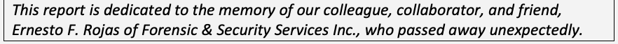

NIST Special Publication · PDF 原文抽出
NIST Cloud Computing Forensic Reference Architecture
NISTクラウドコンピューティング・フォレンジック参照アーキテクチャ
NIST SP 800-201（NIST Cloud Computing Forensic Reference Architecture）の英文と日本語訳を段落ごとに並べた閲覧用ページです。クラウドシステムのフォレンジック対応準備を支援する参照アーキテクチャと方法論を示し、調査上の課題と緩和策を整理します。 翻訳は有志による非公式のもので、NIST および米国商務省が作成・承認・推奨したものではありません。要件の確認にはNIST の正式版 PDFを参照してください。
NIST Special Publication 800
NIST特別刊行物800
NIST SP 800-201
NIST SP 800-201
NIST Cloud Computing
NISTクラウドコンピューティング
Forensic Reference Architecture
フォレンジック参照アーキテクチャ
Martin Herman Michaela Iorga Ahsen Michael Salim Robert H. Jackson Mark R. Hurst Ross A. Leo Anand Kumar Mishra Nancy M. Landreville Yien Wang
Martin Herman、Michaela Iorga、Ahsen Michael Salim、Robert H. Jackson、Mark R. Hurst、Ross A. Leo、Anand Kumar Mishra、Nancy M. Landreville、Yien Wang
This publication is available free of charge from: https://doi.org/10.6028/NIST.SP.800-201
本刊行物は https://doi.org/10.6028/NIST.SP.800-201 から無料で入手できる。
NIST Special Publication 800
NIST特別刊行物800
NIST SP 800-201
NIST SP 800-201
NIST Cloud Computing
NISTクラウドコンピューティング
Forensic Reference Architecture
フォレンジック参照アーキテクチャ
Martin Herman*
Martin Herman*
Information Access Division
情報アクセス部門
Information Technology Laboratory
情報技術研究所
Michaela Iorga
Michaela Iorga
Computer Security Division
コンピュータセキュリティ部門
Information Technology Laboratory
情報技術研究所
Ahsen Michael Salim
Ahsen Michael Salim
American Data Technology, Inc.
American Data Technology, Inc.
Robert H. Jackson
Mark R. Hurst
Robert H. Jackson
Mark R. Hurst
SphereCom Enterprises, Inc.
SphereCom Enterprises, Inc.
Ross A. Leo
Ross A. Leo
University of Houston-Clear Lake
ヒューストン大学クリアレイク校
The CyberSecurity Institute
The CyberSecurity Institute（サイバーセキュリティ研究所）
Anand Kumar Mishra
Anand Kumar Mishra
National Institute of Technology Sikkim
シッキム国立工科大学
India
インド
Nancy M. Landreville
Nancy M. Landreville
Graduate School of Cybersecurity
and Information Technology
University of Maryland (GC)
サイバーセキュリティおよび
情報技術大学院
メリーランド大学（GC）
Yien Wang
Yien Wang
Auburn University
オーバーン大学
*Former NIST employee; all work for this publication was done while at NIST.
*元NIST職員。本刊行物に関するすべての業務は、NIST在職中に実施された。
This publication is available free of charge from: https://doi.org/10.6028/NIST.SP.800-201
本刊行物は https://doi.org/10.6028/NIST.SP.800-201 から無料で入手できる。
July 2024
2024年7月
U.S. Department of Commerce
Gina M. Raimondo, Secretary
米国商務省
Gina M. Raimondo（長官）
National Institute of Standards and Technology
米国国立標準技術研究所（NIST）
Laurie E. Locascio, NIST Director and Under Secretary of Commerce for Standards and Technology
Laurie E. Locascio、NIST所長兼商務省標準技術担当次官
［米国商務省の紋章。公的な標章のため、この非公式サイトには掲載していない。原本 PDF を参照。］
Certain commercial entities, equipment, or materials may be identified in this document in order to describe an experimental procedure or concept adequately. Such identification is not intended to imply recommendation or endorsement by the National Institute of Standards and Technology, nor is it intended to imply that the entities, materials, or equipment are necessarily the best available for the purpose.
この文書では、実験手順または概念を十分に説明する目的で、特定の商業団体、機器または材料を特定することがある。この特定は、米国国立標準技術研究所による推奨または承認を意味するものではなく、また、当該団体、材料または機器が目的に対して必ずしも最良であることを示すものでもない。
There may be references in this publication to other publications currently under development by NIST in accordance with its assigned statutory responsibilities. The information in this publication, including concepts and methodologies, may be used by federal agencies even before the completion of such companion publications. Thus, until each publication is completed, current requirements, guidelines, and procedures, where they exist, remain operative. For planning and transition purposes, federal agencies may wish to closely follow the development of these new publications by NIST.
本刊行物では、NISTが付与された法定責任に従って現在策定中の他の刊行物を参照する場合がある。本刊行物に含まれる情報（概念や方法論を含む）は、関連刊行物の完成前であっても連邦機関が利用できる。そのため、各刊行物が完成するまでは、現行の要件、指針および手順が存在する場合、それらは引き続き有効である。計画および移行のため、連邦機関はNISTによるこれら新刊行物の策定状況を注意深く確認するとよい。
Organizations are encouraged to review all draft publications during public comment periods and provide feedback to NIST. Many NIST cybersecurity publications, other than the ones noted above, are available at https://csrc.nist.gov/publications.
組織には、公開意見募集期間中にすべての草案刊行物を確認し、NISTにフィードバックを提供することが推奨される。上記で言及したものを除き、多くのNISTサイバーセキュリティ刊行物は https://csrc.nist.gov/publications で入手できる。
Authority This publication has been developed by NIST in accordance with its statutory responsibilities under the Federal Information Security Modernization Act (FISMA) of 2014, 44 U.S.C. § 3551 et seq., Public Law (P.L.) 113-283. NIST is responsible for developing information security standards and guidelines, including minimum requirements for federal information systems, but such standards and guidelines shall not apply to national security systems without the express approval of appropriate federal officials exercising policy authority over such systems. This guideline is consistent with the requirements of the Office of Management and Budget (OMB) Circular A-130.
権限 本刊行物は、2014年連邦情報セキュリティ近代化法（FISMA）、合衆国法典第44編§3551以降、Public Law（P.L.）113-283に基づく法定責任に従いNISTが策定した。NISTは、連邦情報システムの最低要件を含む情報セキュリティ標準および指針を策定する責任を負う。ただし、適切な政策権限を行使する連邦当局者の明示的承認がない限り、これらの標準・指針を国家安全保障システムに適用してはならない。本指針は、行政管理予算局（OMB）通達A-130の要件に整合している。
Nothing in this publication should be taken to contradict the standards and guidelines made mandatory and binding on federal agencies by the Secretary of Commerce under statutory authority. Nor should these guidelines be interpreted as altering or superseding the existing authorities of the Secretary of Commerce, Director of the OMB, or any other federal official. This publication may be used by nongovernmental organizations on a voluntary basis and is not subject to copyright in the United States. Attribution would, however, be appreciated by NIST.
本刊行物のいかなる内容も、法定権限に基づき商務長官が連邦機関に義務付け、拘束力を持たせた標準および指針に反すると解釈してはならない。また、本指針は商務長官、OMB長官またはその他の連邦当局者の既存の権限を変更もしくは置き換えるものと解釈してはならない。本刊行物は非政府組織が任意で利用でき、米国では著作権の対象ではない。ただし、NISTは出典表示を歓迎する。
NIST Technical Series Policies Copyright, Use, and Licensing Statements NIST Technical Series Publication Identifier Syntax
NIST技術シリーズの方針 著作権、使用およびライセンスに関する声明 NIST技術シリーズ刊行物識別子の構文
Publication History Approved by the NIST Editorial Review Board on 2024-07-01
刊行履歴 NIST編集審査委員会承認日：2024年7月1日
How to Cite this NIST Technical Series Publication Herman M, Iorga M, Salim AM, Jackson RH, Hurst MR, Leo RA, Mishra AK, Landreville NM, Wang Y (2024) NIST Cloud Computing Forensic Reference Architecture. (National Institute of Standards and Technology, Gaithersburg, MD), NIST Special Publication (SP) 800-201. https://doi.org/10.6028/NIST.SP.800-201
NIST技術シリーズ刊行物の引用方法 Herman M、Iorga M、Salim AM、Jackson RH、Hurst MR、Leo RA、Mishra AK、Landreville NM、Wang Y（2024）『NISTクラウドコンピューティング・フォレンジック参照アーキテクチャ』（原題：NIST Cloud Computing Forensic Reference Architecture）。米国国立標準技術研究所（メリーランド州ゲイサーズバーグ）、NIST特別刊行物（SP）800-201。https://doi.org/10.6028/NIST.SP.800-201
Author ORCID iDs Martin Herman: 0000-0001-9315-6458 Michaela Iorga: 0000-0001-7880-6045
著者のORCID iD Martin Herman：0000-0001-9315-6458 Michaela Iorga：0000-0001-7880-6045
Contact Information sp800-201@nist.gov
お問い合わせ sp800-201@nist.gov
National Institute of Standards and Technology Attn: Computer Security Division, Information Technology Laboratory 100 Bureau Drive (Mail Stop 8930) Gaithersburg, MD 20899-8930
米国国立標準技術研究所 宛先：コンピュータセキュリティ部門、情報技術研究所 100 Bureau Drive（郵便留め8930） メリーランド州ゲイサーズバーグ 20899-8930
Additional Information Additional information about this publication is available at https://csrc.nist.gov/pubs/sp/800/201/final including related content, potential updates, and document history.
追加情報 本刊行物に関する追加情報（関連コンテンツ、更新の可能性、文書履歴を含む）は、https://csrc.nist.gov/pubs/sp/800/201/final で入手できる。
All comments are subject to release under the Freedom of Information Act (FOIA).
すべてのコメントは、情報公開法（FOIA）に基づく公開の対象となる。
Abstract
概要
This document summarizes the research performed by the NIST Cloud Computing Forensic Science Working Group and presents the NIST Cloud Computing Forensic Reference Architecture (CC FRA or FRA), whose goal is to provide support for a cloud system’s forensic readiness. The CC FRA helps users understand the cloud forensic challenges that might exist for an organization’s cloud system. It identifies challenges that require at least partial mitigation strategies and how a forensic investigator would apply those strategies to a particular forensic investigation. The CC FRA presented here is both a methodology and an initial implementation. Users are encouraged to customize this initial implementation for their specific situations and needs.
本書は、NISTクラウドコンピューティング・フォレンジック科学作業部会が実施した研究を要約し、クラウドシステムのフォレンジック対応準備を支援することを目的とする「NISTクラウドコンピューティング・フォレンジック参照アーキテクチャ」（CC FRAまたはFRA）を提示する。CC FRAは、組織のクラウドシステムに存在しうるクラウドフォレンジック上の課題を利用者が理解する助けとなる。また、少なくとも部分的な緩和策を要する課題と、フォレンジック調査者が特定の調査でその策を適用する方法を示す。ここで示すCC FRAは、方法論であると同時に初期実装でもある。利用者は、自らの状況とニーズに応じてこの初期実装をカスタマイズすることが推奨される。
Keywords
キーワード
civil litigation; criminal investigation; cybersecurity; digital forensics; enterprise architecture; enterprise operations; forensic readiness; incident response.
民事訴訟、犯罪捜査、サイバーセキュリティ、デジタルフォレンジック、エンタープライズアーキテクチャ、エンタープライズ運用、フォレンジック対応準備、インシデント対応。
Reports on Computer Systems Technology
コンピュータシステム技術に関する報告書
The Information Technology Laboratory (ITL) at the National Institute of Standards and Technology (NIST) promotes the U.S. economy and public welfare by providing technical leadership for the Nation’s measurement and standards infrastructure. ITL develops tests, test methods, reference data, proof of concept implementations, and technical analyses to advance the development and productive use of information technology. ITL’s responsibilities include the development of management, administrative, technical, and physical standards and guidelines for the cost-effective security and privacy of other than national security-related information in federal information systems. The Special Publication 800-series reports on ITL’s research, guidelines, and outreach efforts in information system security, and its collaborative activities with industry, government, and academic organizations.
米国国立標準技術研究所（NIST）の情報技術研究所（ITL）は、国の計測・標準インフラに技術的リーダーシップを提供し、米国経済と公共の福祉を促進する。ITLは、情報技術の発展と生産的な利用を進めるため、試験、試験方法、参照データ、概念実証実装および技術分析を開発する。ITLの責務には、国家安全保障関連以外の情報について、連邦情報システムで費用対効果に優れたセキュリティとプライバシーを実現する管理、運用、技術および物理的な標準・指針の策定が含まれる。特別刊行物800シリーズは、情報システムセキュリティに関するITLの研究、指針、普及活動ならびに産業界、政府機関、学術機関との協力活動を報告する。
Patent Disclosure Notice
特許開示に関する通知
NOTICE: ITL has requested that holders of patent claims whose use may be required for compliance with the guidance or requirements of this publication disclose such patent claims to ITL. However, holders of patents are not obligated to respond to ITL calls for patents and ITL has not undertaken a patent search in order to identify which, if any, patents may apply to this publication.
通知：ITLは、本刊行物の指針または要件に準拠するために使用が必要となる可能性のある特許請求の範囲について、権利者にITLへの開示を求めている。ただし、特許権者はITLの特許照会に回答する義務を負わず、ITLも本刊行物に適用される可能性のある特許を特定するための特許調査を実施していない。
As of the date of publication and following call(s) for the identification of patent claims whose use may be required for compliance with the guidance or requirements of this publication, no such patent claims have been identified to ITL.
刊行日時点で、本刊行物の指針または要件への準拠に使用が必要となる可能性のある特許請求の範囲を特定する照会を行った結果、そのような特許請求の範囲はITLに報告されていない。
No representation is made or implied by ITL that licenses are not required to avoid patent infringement in the use of this publication.
ITLは、本刊行物の使用に際して特許侵害を回避するためのライセンスが不要であるとは、明示的にも黙示的にも表明していない。
Table of Contents
目次
Executive Summary — 1
エグゼクティブサマリー — 1
1. Introduction — 2
1. はじめに — 2
2. Overview of NIST Cloud Forensic Challenges — 7
2. NISTクラウドフォレンジックの課題の概要 — 7
3. CSA’s Enterprise Architecture — 10
3. CSAのエンタープライズアーキテクチャ — 10
4. Forensic Reference Architecture Methodology — 11
4. フォレンジック参照アーキテクチャの方法論 — 11
5. Forensic Reference Architecture Data — 17
5. フォレンジック参照アーキテクチャのデータ — 17
6. Conclusion — 20
6. 結論 — 20
References — 21
参考文献 — 21
Appendix A. Acronyms — 23
付録A. 略語 — 23
Appendix B. Glossary — 25
付録B. 用語集 — 25
Appendix C. Overview of CSA’s Enterprise Architecture — 26
付録C. CSAエンタープライズアーキテクチャの概要 — 26
Appendix D. The FRA Overlay Approach — 29
付録D. FRAオーバーレイ方式 — 29
Appendix E. NIST’s Forensic Reference Architecture Dataset — 31
付録E. NISTフォレンジック参照アーキテクチャ・データセット — 31
List of Figures
図一覧
Fig. 1. Forensic Reference Architecture overlaying approach — 5
図1. フォレンジック参照アーキテクチャのオーバーレイ方式 — 5
Fig. 2. Mapping flowchart — 12
図2. マッピングフローチャート — 12
Fig. 3. Excerpt of the Forensic Reference Architecture (challenges vs. capabilities Mapping Table) — 18
図3. フォレンジック参照アーキテクチャの抜粋（課題対能力のマッピング表） — 18
Fig. 4. CSA’s Enterprise Architecture (v1.1) [2] — 28
図4. CSAエンタープライズアーキテクチャ（v1.1）[2] — 28
Fig. 5. Graphical representation of NIST’s Cloud Security Reference Architecture (SRA) [15] — 29
図5. NISTクラウドセキュリティ参照アーキテクチャ（SRA）の図示[15] — 29
Fig. 6. Graphical representation of NIST’s Cloud Forensic Challenges [1] — 29
図6. NISTクラウドフォレンジック課題の図示[1] — 29
Fig. 7. Graphical representation of NIST’s Cloud Forensic Reference Architecture — 30
図7. NISTクラウドフォレンジック参照アーキテクチャの図示 — 30
Fig. 8. NIST’s FRA dataset — 31
図8. NIST FRAデータセット — 31
Acknowledgments
謝辞
原本PDFの抜粋画像

This publication was developed by the NIST Cloud Computing Forensic Science Working Group (NCC FSWG) co-chaired by Dr. Martin Herman and Dr. Michaela Iorga. NIST and the co-chairs wish to gratefully acknowledge and thank the members whose dedicated efforts contributed significantly to researching this topic and to generating the data included in this publication, which constitutes the foundation of NIST’s Cloud Computing Forensic Reference Architecture. The authors thank Richard Lee of Citizens Financial Group, who served as a reviewer; Rodrigo Sardinas of Auburn University; Pw Carey of Grapevine Solutions; Richard Austin, formerly of Hewlett-Packard Enterprise; Dr. Ken Stavinoha, formerly with Cisco Systems; and Otto Scot Reemelin, who was with Ipro Tech during this work, for contributing to the data collection, analysis, and review. The authors would also like to thank Josiah Dykstra of the National Security Agency, Kenneth R. Zatyko of Buffalo Block Chain, and independent expert Keyun Ruan for their contributions during the early stages of this research. Finally, the authors wish to thank their peers who continuously provided feedback during the research and development stages of this document.
本刊行物は、Martin Herman博士とMichaela Iorga博士が共同議長を務めるNISTクラウドコンピューティング・フォレンジック科学作業部会（NCC FSWG）が作成した。NISTおよび共同議長は、このテーマの研究と、本刊行物に含まれるデータ（NISTクラウドコンピューティング・フォレンジック参照アーキテクチャの基礎を成す）の生成に、献身的な努力で大きく貢献したメンバーに深く感謝する。著者は、査読者を務めたCitizens Financial GroupのRichard Lee、Auburn UniversityのRodrigo Sardinas、Grapevine SolutionsのPw Carey、Hewlett-Packard Enterpriseの元職員Richard Austin、Cisco Systemsの元職員Ken Stavinoha博士、および本研究期間中にIpro Techに在籍していたOtto Scot Reemelinに、データ収集、分析、レビューへの貢献について謝意を表する。また、研究初期に貢献したNational Security AgencyのJosiah Dykstra、Buffalo Block ChainのKenneth R. Zatyko、独立専門家Keyun Ruanにも感謝する。最後に、本書の研究・開発段階を通じて継続的にフィードバックを提供した同僚に謝意を表する。
Executive Summary
エグゼクティブサマリー
New methodologies are needed to identify, acquire, preserve, examine, and interpret digital evidence in multi-tenant cloud environments with rapid provisioning, global elasticity, and broad network accessibility. These methodologies will provide capabilities for incident response, secure internal enterprise operations, and support for the criminal justice and civil litigation systems.
迅速なプロビジョニング、グローバルな伸縮性、広範なネットワークアクセスを特徴とするマルチテナントのクラウド環境で、デジタル証拠を特定、取得、保全、調査、解釈する新たな方法論が必要である。これらの方法論は、インシデント対応、安全な社内エンタープライズ運用の能力を提供し、刑事司法制度および民事訴訟制度を支援する。
This document presents the NIST Cloud Computing Forensic Reference Architecture (CC FRA or FRA), which provides support for a cloud system’s forensic readiness. The CC FRA is meant to help users understand the cloud forensic challenges that might exist for an organization’s cloud system. It enables cloud forensic stakeholders to analyze the impacts of cloud forensic challenges by considering each challenge in the context of the functional capabilities presented in the Cloud Security Alliance’s Enterprise Architecture. It also identifies forensic challenges that require mitigation strategies and how a forensic investigator would apply those strategies to a particular forensic investigation.
本書は、クラウドシステムのフォレンジック対応準備を支援する「NISTクラウドコンピューティング・フォレンジック参照アーキテクチャ」（CC FRAまたはFRA）を提示する。CC FRAは、組織のクラウドシステムに存在しうるクラウドフォレンジック上の課題を利用者が理解できるよう支援する。Cloud Security Allianceのエンタープライズアーキテクチャに示される機能能力の文脈で各課題を検討することにより、クラウドフォレンジックの利害関係者は課題の影響を分析できる。また、緩和策を要するフォレンジック上の課題と、特定の調査でフォレンジック調査者がそれらの策を適用する方法を示す。
While the CC FRA can be used by any cloud computing practitioner, it is specifically designed to allow cloud system architects, cloud engineers, forensic practitioners, and cloud consumers to ask questions related to their cloud computing architectures. The CC FRA is both a methodology and an initial implementation, and users are encouraged to customize this initial implementation for their specific situations and needs.
CC FRAはあらゆるクラウドコンピューティング実務者が利用できるが、特にクラウドシステムのアーキテクト、エンジニア、フォレンジック実務者、クラウド利用者が、自らのクラウドコンピューティング・アーキテクチャに関する問いを検討できるよう設計されている。CC FRAは方法論であると同時に初期実装でもあり、利用者は自らの状況とニーズに応じて初期実装をカスタマイズすることが推奨される。
1. Introduction
1. はじめに
The NIST Cloud Computing Forensic Science Working Group (NCC FSWG) was established to research forensic science challenges and architectures related to the cloud environment. It previously published NIST Interagency Report (IR) 8006, NIST Cloud Computing Forensic Science Challenges [1], which highlighted the unique digital forensic challenges of public cloud computing services under three aspects of operation: normal operations, adverse operations (i.e., when cloud computing resources are under attack), and operations during criminal exploitation. A description and discussion of digital forensics in cloud computing is provided in Section 1.1.
NISTクラウドコンピューティング・フォレンジック科学作業部会（NCC FSWG）は、クラウド環境に関するフォレンジック科学上の課題とアーキテクチャを研究するために設置された。同部会は以前、NIST省庁間報告書（IR）8006『NISTクラウドコンピューティング・フォレンジック科学の課題』[1]を公表した。同報告書では、パブリッククラウドコンピューティングサービスに固有のデジタルフォレンジック課題を、通常運用、攻撃を受けてクラウドコンピューティング資源が危険にさらされる異常運用、犯罪的悪用時の運用という3つの側面から示した。クラウドコンピューティングにおけるデジタルフォレンジックの説明と考察は第1.1節に示す。
Close examination of these challenges involved analyzing a security reference architecture of choice. For convenience, an already developed security architecture was analyzed -- the Cloud Security Alliance’s (CSA’s) Enterprise Architecture (EA) [2], along with its various functional capabilities and processes, and the potential impacts of each challenge on performing a forensic investigation if a specific functional capability or process were involved in an attack or breach or were used during criminal exploitation. The analysis spans hypothetical scenarios that would result in exploitation of potential weaknesses, vulnerabilities, exposures, or cloud technology for criminal activities. Such elements are of fundamental concern in forensic analysis as they present opportunities that adversaries may seek to exploit or characteristics that can be leveraged by criminals. In any case, there will be evidence of the attack or criminal exploitation for future forensic analysis. The EA is composed of a large set of specific functional capabilities that enable detailed consideration of the effects of each forensic challenge on each of the capabilities.
これらの課題を詳細に検討するため、選択したセキュリティ参照アーキテクチャを分析した。便宜上、すでに開発済みのCloud Security Alliance（CSA）エンタープライズアーキテクチャ（EA）[2]を対象に、その各種機能能力とプロセスを分析した。さらに、特定の機能能力またはプロセスが攻撃・侵害に関与した場合、または犯罪的悪用に用いられた場合に、各課題がフォレンジック調査へ及ぼす潜在的影響も検討した。この分析は、潜在的な弱点、脆弱性、露出またはクラウド技術が犯罪行為に悪用される仮想シナリオを対象とする。このような要素は、敵対者が悪用を狙う機会や犯罪者が利用できる特性を生み出すため、フォレンジック分析の基本的関心事項である。いずれの場合も、将来のフォレンジック分析に利用できる攻撃または犯罪的悪用の証拠が残る。EAは具体的な機能能力を多数含むため、各フォレンジック課題が各能力に及ぼす影響を詳細に検討できる。
The nature of each challenge was also examined (i.e., whether the challenge is technological or non-technological) to determine its role and impact on the forensic examination process. As each challenge was analyzed, the applicability of techniques or technologies became clearer in terms of how they function and contribute to the identification, acquisition, preservation, examination, and interpretation of evidence.
各課題の性質（技術的か非技術的か）も検討し、フォレンジック調査プロセスにおける役割と影響を判断した。課題を分析するにつれて、証拠の識別、取得、保全、調査および解釈において、各技法・技術がどのように機能し寄与するかが明確になった。
This document describes how forensics in the cloud can achieve the same level of acceptance as forensics in traditional computing models. This document, the associated research, and IR 8006 [1] proactively address Executive Order 14028, Improving the Nation’s Cybersecurity [3], which points out the importance of having forensic-ready information systems, including cloud systems.
本書は、クラウドにおけるフォレンジックが、従来のコンピューティングモデルと同等の受容水準を達成する方法を説明する。本書、関連研究、およびIR 8006 [1]は、フォレンジック対応準備のある情報システム（クラウドシステムを含む）の重要性を指摘する行政命令14028『国家のサイバーセキュリティの改善』[3]に先行して対応する。
1.1. The Need for a Cloud-Specific Forensic Reference Architecture
1.1. クラウド固有のフォレンジック参照アーキテクチャの必要性
Digital forensics is the application of science and technology to the discovery and examination of digital artifacts to establish facts and evidence concerning events and conditions that occur within information systems and networks. For decades, information processing systems have enabled the storage, processing, and transmission of information for public and private organizations and individuals. The maintenance, operation, and protection of these information systems have become paramount concerns since a disruption of sufficient magnitude or specific type could threaten business activities. In addition, the use of these systems in support of criminal activities has been of major concern. Digital forensics has traditionally been used for judicial proceedings and regulatory issues but may also be used for other purposes described below.
デジタルフォレンジックとは、情報システムおよびネットワーク内で発生した事象・状態に関する事実と証拠を確立するため、デジタル成果物の発見と調査に科学技術を適用することである。数十年にわたり、情報処理システムは公共・民間組織および個人の情報の保存、処理、送信を可能にしてきた。これらの情報システムの保守、運用、保護は極めて重要な課題となっている。なぜなら、十分に大規模または特定の種類の障害は事業活動を脅かす可能性があるためである。また、犯罪活動を支援するためにこれらのシステムが使用されることも大きな懸念である。デジタルフォレンジックは従来、司法手続や規制対応に用いられてきたが、以下に示す他の目的にも利用できる。
As computer and information science technologies, their implementations, and their operations have changed, digital forensics has adapted. The number of scenarios that may require the application of digital forensic techniques have increased along with the complexity of the underlying architectures.
コンピュータ・情報科学技術、その実装、運用が変化するにつれて、デジタルフォレンジックも適応してきた。基盤となるアーキテクチャが複雑化するのに伴い、デジタルフォレンジック技法の適用が必要となるシナリオも増加している。
One common scenario involves the detailed investigation of criminal activities, including “traditional” forms of crime (e.g., violent crime, property crime, drug trafficking, human trafficking, white-collar crime) and crimes that occur in cyberspace (e.g., ransomware attacks, phishing attacks, data breaches, identity theft, cyber-terrorism, distributed denial of service, illicit cryptocurrency mining, child pornography, and attacks against governments, key corporations, or power grids). Digital forensic procedures involve locating and analyzing digital traces that can help solve the crime and/or allow for incident response.
一般的なシナリオの一つは、犯罪活動の詳細な調査である。これには「従来型」の犯罪（暴力犯罪、財産犯罪、麻薬取引、人身取引、ホワイトカラー犯罪など）と、サイバー空間で発生する犯罪（ランサムウェア攻撃、フィッシング攻撃、データ侵害、個人情報窃取、サイバーテロ、分散型サービス妨害、違法な暗号資産マイニング、児童ポルノ、政府、主要企業または電力網に対する攻撃など）が含まれる。デジタルフォレンジック手順では、犯罪解決および／またはインシデント対応に役立つデジタル痕跡を特定・分析する。
Forensic procedures are also used to investigate civil actions, such as divorce proceedings, asset discovery, insurance claims, lawsuits, and similar cases that often require forensic methods to determine the presence, absence, and movement of data and funds. In each of these cases, forensics plays an essential role in determining facts; assisting in the analysis, validation, and authentication of data; and enabling the documentation of findings.
フォレンジック手順は、離婚手続、資産調査、保険請求、訴訟などの民事案件の調査にも用いられる。これらでは、データや資金の存在、欠如、移動を判断するためにフォレンジック手法がしばしば必要となる。いずれの場合も、フォレンジックは事実の判断、データの分析・検証・認証の支援、調査結果の文書化に不可欠な役割を果たす。
The application of forensic methods may also be required for normal business operations, such as data recovery. During incident response, forensic methods may help mitigate future cyber-attacks, prevent system failure, or minimize data loss. Forensics can also help determine the root cause of an outage event, such as component failure, corrupted software, or intentional sabotage. Other scenarios may involve the close examination of system configurations, potentially questionable employee data storage and activities, and operational aspects related to compliance matters.
データ復旧など、通常の事業運用にもフォレンジック手法の適用が必要となる場合がある。インシデント対応では、将来のサイバー攻撃の緩和、システム障害の防止、データ損失の最小化に役立つ。フォレンジックは、構成要素の故障、ソフトウェアの破損、意図的な妨害などによる停止事象の根本原因の特定にも役立つ。その他、システム構成、従業員による疑わしいデータ保管や活動、コンプライアンスに関連する運用面の詳細な調査が必要なシナリオもある。
The frameworks listed below can provide core support for the design, implementation, assessment, monitoring, and operations of information systems:
以下のフレームワークは、情報システムの設計、実装、評価、監視、運用を中核的に支援する。
•NIST Risk Management Framework (RMF) [4] — A focused guide to information system risk management
•NISTリスク管理フレームワーク（RMF）[4] — 情報システムのリスク管理に焦点を当てた指針。
•ISO 27000 Series [5] — A series of standards on a wide range of information security topics, such as:
○ ISO 27001 [6] — Information security management
○ ISO/IEC 27002 [7] — Information security controls
○ ISO/IEC 27017 [26] — Safeguarding cloud environments and minimizing risk of security incidents
○ ISO/IEC 27018 [8] — Securing personally identifiable information (PII) in the cloud
○ ISO/IEC 27035 [9] — Incident response
○ ISO/IEC 27037 [10] — Digital evidence collection and preservation
•ISO 27000シリーズ[5] — 情報セキュリティの幅広いテーマを扱う一連の標準。例：
○ ISO 27001 [6] — 情報セキュリティ管理
○ ISO/IEC 27002 [7] — 情報セキュリティ管理策
○ ISO/IEC 27017 [26] — クラウド環境の保護とセキュリティインシデントリスクの最小化
○ ISO/IEC 27018 [8] — クラウドにおける個人識別情報（PII）の保護
○ ISO/IEC 27035 [9] — インシデント対応
○ ISO/IEC 27037 [10] — デジタル証拠の収集と保全
•IT Infrastructure Library (ITIL) [11] — A service-oriented architecture (SOA)
•ITインフラストラクチャ・ライブラリ（ITIL）[11] — サービス指向アーキテクチャ（SOA）。
•Sherwood Applied Business Security Architecture (SABSA) [12]
•Sherwood Applied Business Security Architecture（SABSA）[12]
•The Open Group Architecture Framework (TOGAF) [13] – A general security framework
•The Open Group Architecture Framework（TOGAF）[13] — 一般的なセキュリティフレームワーク。
•Cloud Security Alliance STAR program [14] – A progressive security certification
•Cloud Security Alliance STARプログラム[14] — 段階的なセキュリティ認証。
The focus of each of these frameworks varies but generally facilitates architecting, implementing, and operating secure and resilient information systems. The RMF is focused on security from a risk identification and management perspective. As varied as the ISO 27000 series [5] is, it contains standards that address digital evidence and incident response. However, there is not a readily apparent, in-depth exploration of cloud-system forensics.
各フレームワークの焦点は異なるが、一般に安全でレジリエントな情報システムの設計、実装、運用を促進する。RMFは、リスクの特定と管理の観点からセキュリティに焦点を当てる。ISO 27000シリーズ[5]は幅広いが、デジタル証拠とインシデント対応を扱う標準も含む。しかし、クラウドシステムのフォレンジックを深く掘り下げた検討は容易には見当たらない。
The material presented here deals with the matter of forensics performed within a cloud computing environment. The advent of cloud computing has simplified business operations and introduced a level of business agility not previously experienced with traditional or on-premises computing. However, cloud computing has also introduced a range of security and forensics challenges. Enhanced capabilities enjoyed by legitimate businesses and friendly governments are often equally available to opposing nation-states, terrorist groups, and international criminal elements and assets. As a result, targets that were once unassailable by nefarious actors may now be vulnerable to attack or exploitation.
本書は、クラウドコンピューティング環境内で実施するフォレンジックを扱う。クラウドコンピューティングの登場により、事業運用が簡素化され、従来型またはオンプレミスのコンピューティングでは得られなかった事業俊敏性がもたらされた。一方で、幅広いセキュリティおよびフォレンジック上の課題も生じている。正当な企業や友好的な政府が利用する高度な能力は、敵対する国家、テロ組織、国際犯罪組織およびその関係者にも同様に利用可能なことが多い。その結果、かつては悪意ある行為者が攻撃・悪用できなかった標的が、現在では脆弱になっている場合がある。
To a great extent, cloud computing runs on virtualization — that is, the creation of processing resources that have hardware as their basis but run as multiplexed programs and are thus functionally multiplied through it. Cloud forensics involves performing analysis on “virtual machines” using techniques that require “real machines.” In addition, the information obtained from “machines” that are essentially “unreal” is different from traditional digital evidence.
クラウドコンピューティングは多くの場合、仮想化上で動作する。すなわち、ハードウェアを基盤とする処理資源を多重化されたプログラムとして実行し、機能上の資源を増やす。クラウドフォレンジックでは、「仮想マシン」を「実マシン」を必要とする技法で分析する。さらに、本質的に「非実在」の「マシン」から得られる情報は、従来のデジタル証拠とは異なる。
Cloud computing has become increasingly pervasive as more entities discover its advantages. These entities include legitimate businesses, governments, and individuals who use software-as-a-service (SaaS) cloud platforms, as well as criminal and terrorist organizations and opposing nation-states. For legitimate consumers, cloud computing provides capabilities such as:
利点を認識する組織が増えるにつれて、クラウドコンピューティングはますます普及している。これらの組織には、Software as a Service（SaaS）クラウドプラットフォームを利用する正当な企業、政府、個人のほか、犯罪・テロ組織や敵対国家も含まれる。正当な利用者に対し、クラウドコンピューティングは次の能力を提供する。
•More rapid business continuity and disaster recovery
•事業継続および災害復旧の迅速化。
•More effective incident response
•より効果的なインシデント対応。
•Improved information access, management, and archiving
•情報へのアクセス、管理、アーカイブの改善。
•Easier and more immediate collaboration between widely separated individuals and groups
•遠隔地にいる個人・グループ間の共同作業の簡素化と迅速化。
This research has adapted solutions that originated in the on-premises data center to the significant differences presented by the cloud.
本研究では、オンプレミスのデータセンター向けに考案された解決策を、クラウドがもたらす大きな相違に適応させた。
As important as they are for addressing significant events related to business operations, forensic methods have at least equal importance when contributing to matters of compliance, legality, and criminal exploitation. Careful treatment has been given to these questions during this research to ensure that the findings do not merely consider technical aspects but also address the broader aspects of their material application. Unquestionably, close examination of these adverse events is required to understand their incipience and progression and — in particular — to ensure that remediation, event reconstruction, and attribution are effectively and credibly realized.
事業運用に関する重大事象への対処に重要であるのと同様に、コンプライアンス、適法性、犯罪的悪用に関わる問題でも、フォレンジック手法は少なくとも同等に重要である。本研究では、技術面だけでなく、実際の適用に関するより広範な側面にも対応できるよう、これらの問いを慎重に扱った。疑いなく、これらの有害事象の発生と進展を理解し、特に是正、事象の再構成、帰属の特定を効果的かつ信頼できる形で実現するには、詳細な調査が不可欠である。
Thus, it has been the specific focus and goal of this effort to research these issues, examine and clarify the forensic challenges, and ultimately formulate and validate the capabilities required to apply accepted forensic techniques and technologies to this unique computing environment. The result is the Cloud Computing Forensic Reference Architecture.
そこで本取り組みでは、これらの問題を調査し、フォレンジック上の課題を検討・明確化し、最終的に、この固有のコンピューティング環境に受け入れられたフォレンジック技法・技術を適用するために必要な能力を策定し、検証することを具体的な焦点と目標とした。その成果がクラウドコンピューティング・フォレンジック参照アーキテクチャである。
In as much as a security reference architecture must incorporate standards and requirements that will inform system actualization and operation with respect to security, applying a forensic reference architecture will likewise inform that system actualization and operation with the capability to more effectively examine, understand, reconstruct, and remediate a variety of system events and disruptions.
セキュリティ参照アーキテクチャが、システムの具体化と運用におけるセキュリティを指導する標準・要件を取り込む必要があるのと同様に、フォレンジック参照アーキテクチャを適用することで、さまざまなシステム事象や中断をより効果的に調査、理解、再構成、修正する能力を備えたシステムの具体化と運用を支援できる。
The goal of the CC FRA is to support a cloud system’s forensic readiness by helping users understand the forensic challenges that might exist for an organization’s cloud system. It identifies which forensic challenges require mitigation strategies and how a forensic investigator would apply those strategies to a particular forensic investigation. The CC FRA will likely evolve over time with more use and research.
CC FRAの目標は、組織のクラウドシステムに存在しうるフォレンジック上の課題を利用者が理解できるよう支援し、クラウドシステムのフォレンジック対応準備を支えることである。緩和策が必要なフォレンジック課題と、個別の調査でフォレンジック調査者がその策を適用する方法を特定する。CC FRAは、利用と研究の進展に伴って今後発展する見込みである。
1.2. The Approach
1.2. アプローチ
The CC FRA builds on several foundational layers, the first of which is the understanding that it addresses forensics in the context of a cloud computing environment. Building upon the fundamental relationship between security, incident response, and forensics, the CC FRA is designed to be an overlay to SP 800-200 ipd (initial public draft), NIST Cloud Computing Security Reference Architecture (SRA) [15], which focuses on security risk management considerations and security controls selection for cloud ecosystems and leverages the CSA’s Enterprise Architecture (EA). Section 3 and Appendix C describe the CSA’s EA and its use in deriving the reference architecture, while Sec. 4 elaborates on the overlay approach employed for the CC FRA.
CC FRAは複数の基礎レイヤーの上に構築されている。第一は、クラウドコンピューティング環境におけるフォレンジックを扱うという理解である。セキュリティ、インシデント対応、フォレンジックの基本的な関係を踏まえ、CC FRAは、クラウドエコシステムのセキュリティリスク管理上の考慮事項とセキュリティ管理策の選定に焦点を当て、CSAエンタープライズアーキテクチャ（EA）を活用するSP 800-200 IPD（初期公開草案）『NISTクラウドコンピューティング・セキュリティ参照アーキテクチャ（SRA）』[15]へのオーバーレイとして設計されている。第3章および付録Cでは、CSAのEAと、参照アーキテクチャを導出する際の利用方法を説明する。第4章ではCC FRAで用いるオーバーレイ方式を詳述する。
![Fig. 1. Forensic Reference Architecture overlaying approach. Four architecture diagrams are drawn as stacked, tilted layers. From bottom to top: “Any reference architecture of choice” (with a CSA logo), “SRA”, “Cloud forensic challenges (NIST IR 8006)” and “FRA”. To the right, numbered steps align with the layers from bottom to top: 1. Select cloud components; 2. Select security controls for system’s components; 3. Identify challenges that impact your system’s components; 4. Mitigate challenges & make all system’s components forensics-ready. The small text inside the layers is not legible at the printed size.](assets/201/p0013-figure-01.png)
図1. フォレンジック参照アーキテクチャのオーバーレイ方式。4つのアーキテクチャ図が傾いた層として積み重ねられている。下から順に「Any reference architecture of choice」（任意の参照アーキテクチャ、CSA のロゴ付き）、「SRA」、「Cloud forensic challenges (NIST IR 8006)」（クラウドフォレンジック課題）、「FRA」である。右側には、層に合わせて下から番号付きの手順がある。1. Select cloud components（クラウドの構成要素を選択する）、2. Select security controls for system’s components（システムの構成要素のセキュリティ管理策を選択する）、3. Identify challenges that impact your system’s components（システムの構成要素に影響する課題を特定する）、4. Mitigate challenges & make all system’s components forensics-ready（課題を緩和し、システムのすべての構成要素をフォレンジック対応可能にする）。層の中の小さな文字は印刷の大きさでは読めない。
Fig. 1. Forensic Reference Architecture overlaying approach
図1. フォレンジック参照アーキテクチャのオーバーレイ方式
The bottom layer in Figure 1 graphically represents the cloud reference architecture of choice for this document, which is the CSA EA [2].
図1の最下層は、本書で選択したクラウド参照アーキテクチャ、すなわちCSA EA [2]を図示する。
The layer above represents the NIST cloud SRA (see Appendix D – Figure 5). The next layer represents the NIST cloud forensic challenges (see Appendix D – Figure 6). The top layer graphically represents the NIST FRA (see Appendix D – Figure 7) described in this document. This overlay approach (i.e., a superimposed, adapted set or subset) leverages components, concepts and attributes defined in the CSA EA [2] — more precisely, the CSA TCI v1.1 (the initial version of the CSA’s EA - see Appendix C) and in the NIST cloud SRA, analyzed in the context of the NIST IR 8006 cloud forensic challenges.
その上の層はNISTクラウドSRA（付録Dの図5参照）を表す。次の層はNISTクラウドフォレンジック課題（付録Dの図6参照）を表す。最上層は本書で説明するNIST FRA（付録Dの図7参照）を図示する。このオーバーレイ方式（すなわち重ね合わせ、適応した一連の要素またはその一部）では、CSA EA [2]、より正確にはCSA TCI v1.1（CSA EAの初期版。付録C参照）、およびNISTクラウドSRAで定義された構成要素、概念、属性を活用し、それらをNIST IR 8006のクラウドフォレンジック課題の文脈で分析する。
More precisely, the FRA layer leverages the three layers graphically represented beneath it by analyzing each capability of the SRA (previously derived from the CSA’s EA [2] - see Appendix D -Figure 5) in the context of the challenges documented in IR 8006 [1] (see Appendix D - Figure 6). The analysis determines whether each challenge affects the capability if implemented in a cloud environment as part of a cloud service or solution. If the challenge does affect the capability, then the functional capability is considered to have forensic importance, and it is imported to or considered a capability of the FRA (see Appendix E - Figure 8 for a larger image).
より具体的には、FRAレイヤーは、その下に図示された3つのレイヤーを活用し、SRAの各能力（CSA EA [2]から導出。付録Dの図5参照）をIR 8006 [1]に記載された課題（付録Dの図6参照）に照らして分析する。クラウドサービスまたはソリューションの一部としてクラウド環境に実装した場合、各課題が能力に影響するかを判断する。影響する場合、その機能能力はフォレンジック上重要とみなされ、FRAに取り込まれるか、FRAの能力として扱われる（拡大画像は付録Eの図8参照）。
2. Overview of NIST Cloud Forensic Challenges
2. NISTクラウドフォレンジック課題の概要
In IR 8006 [1], the NCC FSWG identified 62 challenges related to cloud computing forensics along with the potential results of overcoming each challenge. That document provides a preliminary analysis of these challenges by including:
IR 8006 [1]では、NCC FSWGがクラウドコンピューティングのフォレンジックに関する62の課題と、各課題を克服した場合に得られる潜在的成果を特定した。同報告書では、次の事項を含め、これらの課題を予備的に分析している。
•the relationship between each challenge and the five essential characteristics of cloud computing, as defined in the NIST cloud computing model [16];
•各課題と、NISTクラウドコンピューティングモデル[16]で定義されたクラウドコンピューティングの5つの本質的特性との関係。
•how the challenges correlate to cloud technology; and
•各課題とクラウド技術との相関。
•nine categories to which the challenges belong.
•課題が属する9つのカテゴリー。
The analysis also considers logging data, data in media, and issues associated with time, location, and sensitive data. In addition, the relevance of topics such as rapid elasticity, multi-tenancy, and hypervisor/virtual machine layers is discussed. These 62 challenges support the criminal justice and civil litigation systems, security incident response, and internal enterprise operations.
分析では、ログデータ、記録媒体内のデータ、時間、場所、機微データに関する問題も考慮する。さらに、迅速な伸縮性、マルチテナンシー、ハイパーバイザー／仮想マシン層などのトピックの関連性を論じる。これら62の課題は、刑事司法制度および民事訴訟制度、セキュリティインシデント対応、社内エンタープライズ運用を支援する。
The nine categories to which the challenges belong are reproduced below [1]:
課題が属する9つのカテゴリーを以下に再掲する[1]。
1.Architecture (e.g., diversity, complexity, provenance, multi-tenancy, data segregation). Architecture challenges in cloud forensics include:
1.アーキテクチャ（例：多様性、複雑性、来歴、マルチテナンシー、データ分離）。クラウドフォレンジックにおけるアーキテクチャ上の課題には、次のものがある。
○ Dealing with variability in cloud architectures between providers
○ Tenant data compartmentalization and isolation during resource provisioning
○ Proliferation of systems, locations, and endpoints that can store data
○ Accurate and secure provenance for maintaining and preserving chain of custody
○ プロバイダー間で異なるクラウドアーキテクチャへの対応
○ 資源のプロビジョニング中におけるテナントデータの区画化と分離
○ データを保存しうるシステム、場所、エンドポイントの増加
○ 証拠保全の連鎖を維持するための正確で安全な来歴管理
2.Data collection (e.g., data integrity, data recovery, data location, imaging). Data collection challenges in cloud forensics include:
2.データ収集（例：データ完全性、データ復旧、データの所在、イメージ取得）。クラウドフォレンジックにおけるデータ収集の課題には、次のものがある。
○ Locating forensic artifacts in large, distributed, and dynamic systems
○ Locating and collecting volatile data
○ Data collection from virtual machines
○ Data integrity in a multi-tenant environment where data is shared among multiple computers in multiple locations and accessible by multiple parties
○ 大規模で分散し、動的なシステム内でフォレンジック成果物の所在を特定すること
○ 揮発性データの所在特定と収集
○ 仮想マシンからのデータ収集
○ 複数の場所にある複数のコンピュータでデータを共有し、複数当事者がアクセスできるマルチテナント環境におけるデータ完全性
○ Inability to image all of the forensic artifacts in the cloud
○ Accessing the data of one tenant without breaching the confidentiality of other tenants
○ クラウド内のフォレンジック成果物すべてのイメージを取得できないこと
○ 他のテナントの機密性を侵害せずに特定テナントのデータへアクセスすること
○ Recovery of deleted data in a shared and distributed virtual environment
○ 共有・分散型の仮想環境で削除済みデータを復旧すること
3.Analysis (e.g., correlation, reconstruction, time synchronization, logs, metadata, timelines). Analysis challenges in cloud forensics include:
3.分析（例：相関付け、再構成、時刻同期、ログ、メタデータ、タイムライン）。クラウドフォレンジックにおける分析上の課題には、次のものがある。
○ Correlation of forensic artifacts across and within cloud providers
○ Reconstruction of events from virtual images or storage
○ Integrity of metadata
○ クラウドプロバイダー間および各プロバイダー内でフォレンジック成果物を相関付けること
○ 仮想イメージまたはストレージから事象を再構成すること
○ メタデータの完全性
○ Timeline analysis of log data, including synchronization of timestamps
○ ログデータのタイムライン分析（タイムスタンプの同期を含む）
4.Anti-forensics (e.g., obfuscation, data hiding, malware). Anti-forensics is a set of techniques used specifically to prevent or mislead forensic analysis. Anti-forensic challenges in cloud forensics include:
4.アンチフォレンジック（例：難読化、データ隠蔽、マルウェア）。アンチフォレンジックとは、フォレンジック分析を妨害または誤導することを目的とした一連の技法である。クラウドフォレンジックにおけるアンチフォレンジックの課題には、次のものがある。
○ The use of obfuscation, malware, data hiding, or other techniques to compromise the integrity of evidence
○ Malware may circumvent virtual machine isolation methods
○ 難読化、マルウェア、データ隠蔽その他の技法を用いて証拠の完全性を損なうこと
○ マルウェアが仮想マシンの隔離方式を回避する可能性
5.Incident first responders (e.g., trustworthiness of cloud providers, response time, reconstruction). Incident first responder challenges in cloud forensics include:
5.インシデント初動対応者（例：クラウドプロバイダーの信頼性、対応時間、再構成）。クラウドフォレンジックで初動対応者が直面する課題には、次のものがある。
○ Confidence, competence, and trustworthiness of the cloud providers to act as first responders and perform data collection
○ Difficulty in performing initial triage
○ Processing a large volume of collected forensic artifacts
○ クラウドプロバイダーが初動対応者として行動しデータ収集を行うことに対する確信、能力、信頼性
○ 初期トリアージの実施が困難であること
○ 大量の収集済みフォレンジック成果物を処理すること
6.Role management (e.g., data owners, identity management, users, access control). Role management challenges in cloud forensics include:
6.役割管理（例：データ所有者、ID管理、利用者、アクセス制御）。クラウドフォレンジックにおける役割管理の課題には、次のものがある。
○ Uniquely identifying the owner of an account
○ Decoupling between cloud user credentials and physical users
○ Ease of anonymity and creating fictitious identities online
○ Determining exact ownership of data
○ Authentication and access control
○ アカウント所有者を一意に特定すること
○ クラウド利用者の認証情報と実在の利用者との乖離（切り離し）
○ オンラインで匿名化し、架空のIDを作成しやすいこと
○ データの正確な所有者を特定すること
○ 認証とアクセス制御
7.Legal (e.g., jurisdictions, laws, service-level agreements, contracts, subpoenas, international cooperation, privacy, ethics). Legal challenges in cloud forensics include:
7.法的課題（例：管轄区域、法律、サービスレベル契約、契約、召喚状、国際協力、プライバシー、倫理）。クラウドフォレンジックにおける法的課題には、次のものがある。
○ Identifying and addressing issues of jurisdictions for legal access to data
○ Lack of effective channels for international communication and cooperation during an investigation
○ Data acquisition that relies on the cooperation, competence, and trustworthiness of cloud providers
○ Missing terms in contracts and service-level agreements
○ Issuing subpoenas without knowledge of the physical location of data
○ データへの法的アクセスに関する管轄上の問題を特定し、対処すること
○ 調査中の国際的な連絡・協力の有効な経路が不足していること
○ クラウドプロバイダーの協力、能力、信頼性に依存するデータ取得
○ 契約やサービスレベル契約に必要な条項が欠けていること
○ データの物理的所在地が不明なまま召喚状を発行すること
8.Standards (e.g., standard operating procedures, interoperability, testing, validation). Standards challenges in cloud forensics include:
8.標準（例：標準作業手順、相互運用性、試験、検証）。クラウドフォレンジックの標準に関する課題には、次のものがある。
○ Lack of minimum/basic SOPs, practices, and tools
○ Lack of interoperability among cloud providers
○ Lack of test and validation procedures
○ 最低限の基本的な標準作業手順（SOP）、プラクティス、ツールが不足していること
○ クラウドプロバイダー間の相互運用性が不足していること
○ 試験・検証手順が不足していること
9.Training (e.g., forensic investigators, cloud providers, qualification, certification). Training challenges in cloud forensics include:
9.訓練（例：フォレンジック調査者、クラウドプロバイダー、資格、認証）。クラウドフォレンジックにおける訓練上の課題には、次のものがある。
○ Misuse of digital forensic training materials that are not applicable to cloud forensics
○ Lack of cloud forensic training and expertise for both investigators and instructors
○ クラウドフォレンジックに適用できないデジタルフォレンジック訓練資料の誤用
○ 調査者と指導者の双方におけるクラウドフォレンジックの訓練・専門知識の不足
○ Limited knowledge about evidence by record-keeping personnel in cloud providers
○ クラウドプロバイダーの記録管理担当者が証拠に関して持つ知識が限られていること
3. CSA’s Enterprise Architecture
3. CSAエンタープライズアーキテクチャ
NIST does not prescribe the use of the CSA EA and only uses it for convenience and illustration. Another security architecture could have been used instead. The CSA EA was developed by a public working group and, therefore, represents the thinking of the community more broadly rather than just a single company. An overview of the CSA EA is provided in Appendix C.
NISTはCSA EAの利用を規定しておらず、便宜上および説明のためにのみ使用している。他のセキュリティアーキテクチャを代わりに使うこともできた。CSA EAは公開作業部会によって開発されたため、単一企業の考えだけでなく、より広くコミュニティの考えを代表している。CSA EAの概要は付録Cに示す。
The CSA’s EA is both a methodology and a set of tools that enable security architects, enterprise architects, and risk management professionals to leverage a common set of solutions and controls [2]. These solutions and controls fulfill common requirements that risk managers must assess regarding the operational status of internal IT security and cloud provider controls. These controls are expressed in terms of security capabilities and designed to create a common roadmap to meet the security needs of businesses.
CSA EAは方法論であると同時に、セキュリティアーキテクト、エンタープライズアーキテクト、リスク管理専門家が共通の解決策と管理策一式を利用できるようにするツール群でもある[2]。これらの解決策と管理策は、リスク管理者が内部ITセキュリティおよびクラウドプロバイダーの管理策の運用状況について評価すべき共通要件を満たす。管理策はセキュリティ能力として表現され、企業のセキュリティニーズを満たす共通のロードマップを作成するよう設計されている。
With the CSA EA, a set of functional capabilities is defined within the following domains: Business Operation Support Services, Information Technology Operation and Support, Security and Risk Management, Presentation Services, Application Services, Information Services, and Infrastructure Services. Together, there are 347 functional capabilities within these domains.
CSA EAでは、次のドメインに一連の機能能力を定義する：事業運用支援サービス、情報技術運用・サポート、セキュリティ・リスク管理、プレゼンテーションサービス、アプリケーションサービス、情報サービス、インフラストラクチャサービス。これらのドメインには、合計347の機能能力が含まれる。
The CSA’s EA functional capabilities are leveraged by the NIST Cloud SRA [15], which is comprised of a formal model designed as a security overlay to the NIST Cloud Computing Reference Architecture [22] and a methodology for architecting and orchestrating a cloud-based solution. The methodology allows cloud architects to identify the system’s functional capabilities. The orchestration employs a risk-based approach that follows the Risk Management Framework (RMF) [4] applied to cloud-based systems.
NISTクラウドSRA [15]はCSA EAの機能能力を活用する。SRAは、NISTクラウドコンピューティング参照アーキテクチャ[22]へのセキュリティオーバーレイとして設計された正式モデルと、クラウドベースのソリューションを設計・編成する方法論から成る。この方法論により、クラウドアーキテクトはシステムの機能能力を特定できる。編成には、クラウドベースのシステムに適用されるリスク管理フレームワーク（RMF）[4]に従うリスクベースのアプローチを用いる。
The SRA’s risk-based approach for determining a cloud actor’s responsibilities for implementing specific system components supports a clear delineation between the security responsibilities of cloud providers and consumers and an understanding of the customer responsibility matrix. Specifically, for each cloud service model, system components are analyzed to identify the level of involvement of each cloud actor when implementing those components.
クラウドアクターが特定のシステム構成要素の実装に関して負う責任をリスクベースで判断するSRAのアプローチは、クラウドプロバイダーと利用者のセキュリティ責任を明確に区分し、顧客責任マトリクスを理解するのに役立つ。具体的には、各クラウドサービスモデルについて、構成要素を実装する際の各クラウドアクターの関与度を特定するためにシステム構成要素を分析する。
4. Forensic Reference Architecture Methodology
4. フォレンジック参照アーキテクチャの方法論
The CC FRA aims to help users understand the cloud forensic challenges that might exist for an organization’s cloud systems. When architecting or orchestrating a new cloud system, cloud architects and cloud security and forensic practitioners are encouraged to use the CC FRA to identify which challenges could impact the system and require at least partial mitigation strategies to minimize the risk incurred during operations (e.g., allowing real-time interventions based on the proactively generated forensic data to eliminate potential negative impacts on digital forensic investigations).
CC FRAは、組織のクラウドシステムに存在しうるクラウドフォレンジック上の課題を利用者が理解できるよう支援する。新たなクラウドシステムを設計・編成する際、クラウドアーキテクト、クラウドセキュリティおよびフォレンジック実務者はCC FRAを用い、どの課題がシステムに影響し、運用中のリスクを最小化するために少なくとも部分的な緩和策が必要かを特定することが推奨される（例：事前に生成したフォレンジックデータに基づくリアルタイム介入を可能にして、デジタルフォレンジック調査への潜在的な悪影響を排除する）。
While the FRA can be used by any cloud computing practitioner, it is specifically designed to help the following target audiences find answers to specific questions related to their cloud computing architectures:
FRAはあらゆるクラウドコンピューティング実務者が利用できるが、特に次の対象読者がクラウドアーキテクチャに関する個別の問いに答えられるよう設計されている。
•Target Audience #1: Cloud system architects and engineers. This target audience might ask: “To what extent does the cloud system I’m designing facilitate the use of digital forensics?” The architectural methodology and initial architecture presented here can help this audience identify potential challenges to conducting forensics and focus on areas of concern. System trade-offs can be considered as well (e.g., the more that a system facilitates the use of forensics, the greater the negative operational or economic impacts might be, or the greater the chance that privacy might be impacted negatively).
•対象読者1：クラウドシステムのアーキテクトおよびエンジニア。この対象読者は、例えば「設計中のクラウドシステムは、デジタルフォレンジックの利用をどの程度支援するか」と問う場合がある。ここで示すアーキテクチャ方法論と初期アーキテクチャは、フォレンジック実施上の潜在的課題を特定し、注意すべき領域に焦点を当てるのに役立つ。システム上のトレードオフも検討できる（例：フォレンジック利用を支援する度合いを高めるほど、運用面・経済面の悪影響が大きくなる可能性や、プライバシーへの悪影響が生じる可能性が高まる）。
•Target Audience #2: Forensic investigators. This target audience might ask: “What items do I need to be aware of to conduct digital forensics in the cloud environment versus a traditional or on-premises computing environment?” This audience will also benefit from identifying potential challenges to conducting forensics and which challenges may impact the system under investigation. To the extent that these challenges have been at least partially mitigated, the forensic investigator can determine whether and how appropriate forensic artifacts might be retrieved.
•対象読者2：フォレンジック調査者。この対象読者は、例えば「クラウド環境と従来型またはオンプレミス環境では、デジタルフォレンジックを実施する際にどのような点を把握すべきか」と問う場合がある。また、フォレンジック実施上の潜在的課題と、調査対象のシステムに影響しうる課題を特定することも有益である。これらの課題が少なくとも部分的に緩和されている範囲で、フォレンジック調査者は適切なフォレンジック成果物を取得できるか、取得方法は何かを判断できる。
•Target Audience #3: Consumers who want to procure cloud services from providers. This target audience might ask: “What forensic questions and issues do I need to consider when discussing what a cloud provider has to offer?”
•対象読者3：プロバイダーからクラウドサービスを調達しようとする利用者。この対象読者は、例えば「クラウドプロバイダーの提供内容を協議する際に、どのようなフォレンジック上の問いや問題を検討すべきか」と問う場合がある。
The CC FRA enables cloud security and forensic stakeholders to analyze the extent to which the cloud forensic challenges identified in IR 8006 [1] are impacting their systems. Although the document provides a proof of concept using the CSA's EA, a different architecture of choice can be used.
CC FRAにより、クラウドセキュリティおよびフォレンジックの関係者は、IR 8006 [1]で特定されたクラウドフォレンジック課題が自らのシステムに及ぼす影響の程度を分析できる。本書ではCSA EAを用いた概念実証を示すが、別のアーキテクチャを選択して用いることもできる。
The 62 forensic challenges and 347 functional capabilities described in Sec. 2 and Appendix C, respectively, provide the basis for determining which capabilities are affected by each of the challenges. All possible pairs of challenges and capabilities are considered. The capabilities help focus possible mitigation efforts. If a challenge affects a capability, there may be mitigation approaches to perform better forensics with regard to that capability. Such information could prove useful for forensic practitioners, developers, and researchers. For example, an attacker could maliciously delete log information that discloses the attacker’s activities, preventing a forensic investigator from correlating events and potentially revealing meaningful information.
第2章および付録Cに記載された62のフォレンジック課題と347の機能能力を基礎として、各課題がどの能力に影響するかを判断する。課題と能力のすべての組合せを検討する。能力の情報は、緩和策の候補を絞るのに役立つ。課題が能力に影響する場合、その能力に関するフォレンジックを改善する緩和策が考えられる。この情報は、フォレンジック実務者、開発者、研究者に有用となりうる。例えば、攻撃者が自身の活動を明らかにするログ情報を悪意を持って削除すると、フォレンジック調査者は事象を相関付けられなくなり、有意義な情報を得られない可能性がある。
When a cloud service customer is informed of such a challenge, the customer could mitigate the challenge by using or implementing a log file integrity validator which uses digitally signed digests.
クラウドサービスの顧客がこのような課題を把握した場合、デジタル署名付きダイジェストを用いるログファイル完全性検証ツールを実装または利用することで課題を緩和できる。
The NCC FSWG has developed a mapping between functional capabilities and forensic challenges. For each functional capability, the mapping shows all of the forensic challenges that affect that capability. This has resulted in a Mapping Table of 347 rows (one for each capability) and 62 columns (one for each challenge). An entry in the table is YES if the associated challenge affects the associated capability; otherwise, the entry is NO. (See Figure 3 for an excerpt of this table.)
NCC FSWGは、機能能力とフォレンジック課題とのマッピングを作成した。各機能能力について、その能力に影響するすべてのフォレンジック課題を示す。その結果、347行（能力ごとに1行）、62列（課題ごとに1列）のマッピング表が得られた。表の項目は、該当する課題が該当する能力に影響する場合はYES、そうでない場合はNOとなる（抜粋は図3参照）。
When the question is asked: does a forensic challenge affect a functional capability, it is defined to mean: if the challenge were overcome, would that make it easier to conduct a cloud forensic investigation on the considered functional capability? This is the relationship that the mapping between challenges and capabilities is capturing.
「フォレンジック課題は機能能力に影響するか」という問いは、「課題を克服すれば、対象の機能能力に関するクラウドフォレンジック調査が容易になるか」を意味する。課題と能力のマッピングで捉えるのは、この関係である。
A summary developed for each of the 62 challenges (found in IR 8006 [1], Annex A, Table 1) answers the following question: What advantages would be provided to a forensic investigator if this challenge were overcome? If these advantages imply that the quality of forensics that can be performed on the functional capability could be improved, then the answer to the question in the previous paragraph is YES, overcoming the challenge could make it easier to perform a forensic investigation on the capability.
IR 8006 [1]付録Aの表1にある62課題それぞれについて作成した要約は、次の問いに答える：「この課題を克服すると、フォレンジック調査者にどのような利点があるか」。その利点によって対象能力に対するフォレンジックの質が向上しうる場合、前段落の問いへの答えはYESであり、課題を克服すると、その能力に対するフォレンジック調査が容易になる。
Fig. 2 shows a flowchart for achieving a narrow, precise mapping between challenges and capabilities.
図2は、課題と能力を限定的かつ正確にマッピングするためのフローチャートを示す。
![Fig. 2. Mapping flowchart. “START HERE: Q2-a): Does the challenge deal primarily with non-technical issues, including standards, legal issues, contracts, SLAs, jurisdiction issues, privacy, ethical issues, training, qualification, or certification?” YES leads to Q3-a) (Does the functional capability deal primarily with standards, legal issues, contracts, SLAs, jurisdiction issues, privacy, ethical issues, training, qualification, or certification?); NO leads to Q2-b) (Does the challenge deal primarily with technical issues?). Q2-b NO leads to a purple hexagon “NO, See NOTE 1 next”; Q2-b YES leads to Q3-b) (Does the functional capability deal primarily with technical issues?). From the upper Q3-a, YES goes as Group2 (Non-Technical) to Q1, and NO goes to Q2-c) (Does the use of technology significantly amplify the ability to overcome the challenge?). From the upper Q3-b, YES goes as Group1 (Technical) to Q1, and NO goes to Q2-d) (Does the use of non-technical solutions significantly amplify the ability to overcome the challenge?). Q2-c NO and Q2-d NO lead to an orange NO circle. Q2-c YES leads to a lower Q3-b, and Q2-d YES leads to a lower Q3-a; NO from either leads to a purple hexagon “NO, See NOTE 2 next”. The lower Q3-a YES goes as Group2 (Non-Technical), and the lower Q3-b YES goes as Group1 (Technical), to Q1: “If the challenge were overcome, would that make it easier to conduct a cloud forensic investigation on the functional capability?” Q1 YES leads to a green YES circle, and NO to an orange NO circle.](assets/201/p0020-figure-01.png)
図2. マッピングフローチャート。「START HERE（ここから開始）: Q2-a): 課題は主として非技術的な問題（標準、法的問題、契約、SLA、管轄の問題、プライバシー、倫理的問題、訓練、資格又は認証）を扱うか」。YES なら Q3-a)（機能能力は主として標準、法的問題、契約、SLA、管轄の問題、プライバシー、倫理的問題、訓練、資格又は認証を扱うか）へ、NO なら Q2-b)（課題は主として技術的な問題を扱うか）へ進む。Q2-b が NO なら紫の六角形「NO、See NOTE 1 next（次の注1を参照）」へ、YES なら Q3-b)（機能能力は主として技術的な問題を扱うか）へ進む。上の Q3-a が YES なら Group2 (Non-Technical)（グループ2、非技術的）として Q1 へ、NO なら Q2-c)（技術の利用は課題を克服する能力を大きく高めるか）へ進む。上の Q3-b が YES なら Group1 (Technical)（グループ1、技術的）として Q1 へ、NO なら Q2-d)（非技術的な解決策の利用は課題を克服する能力を大きく高めるか）へ進む。Q2-c と Q2-d の NO はオレンジの円「NO」に至る。Q2-c が YES なら下の Q3-b へ、Q2-d が YES なら下の Q3-a へ進み、いずれも NO なら紫の六角形「NO、See NOTE 2 next（次の注2を参照）」に至る。下の Q3-a の YES は Group2 (Non-Technical) として、下の Q3-b の YES は Group1 (Technical) として、Q1「課題が克服されたら、その機能能力に対するクラウドフォレンジック調査の実施は容易になるか」へ進む。Q1 の YES は緑の円「YES」に、NO はオレンジの円「NO」に至る。
Fig. 2. Mapping flowchart
図2. マッピングフローチャート
The flowchart provides users with a uniform method for determining the applicability of a challenge to a particular capability. In conducting the analysis, the NCC FSWG placed each cloud forensic challenge into one of two groups: 1) challenges that are primarily technical in nature (e.g., architecture) or 2) challenges that are primarily non-technical in nature (e.g., legal). This led to the creation of questions Q2-a, Q2-b, Q2-c, and Q2-d in the flowchart, which inform placement into the two groups. If a challenge deals primarily with standards, legal issues, contracts, service-level agreements, jurisdiction issues, privacy, ethical issues, training, qualifications, or certifications, then the challenge is considered non-technical. Otherwise, it is considered technical. This grouping provides a simple and straightforward method for analyzing the high-level characteristics of each challenge.
このフローチャートは、特定の能力に課題が適用されるかを判断するための統一的な方法を利用者に提供する。分析では、NCC FSWGが各クラウドフォレンジック課題を、主として技術的（例：アーキテクチャ）な課題と、主として非技術的（例：法的）な課題の2群に分類した。この分類に基づき、フローチャートに質問Q2-a、Q2-b、Q2-c、Q2-dを設けた。これらの質問は、2群のどちらに分類するかを判断するためのものである。課題が主に標準、法的問題、契約、サービスレベル契約、管轄問題、プライバシー、倫理、訓練、資格または認証を扱う場合、非技術的とみなす。それ以外は技術的とみなす。この分類により、各課題の高水準の特性を簡潔かつ直接的に分析できる。
Similarly, the NCC FSWG placed each of the cloud functional capabilities into one of two groups: 1) primarily technical or 2) primarily non-technical. If a capability deals primarily with standards, legal issues, contracts, service-level agreements, jurisdiction issues, privacy, ethical issues, training, qualification, or certification, then the capability is considered non-technical. Otherwise, it is considered technical. This led to the creation of questions Q3-a and Q3-b.
同様にNCC FSWGは、クラウドの機能能力を主に技術的なものと非技術的なものの2群に分類した。能力が主に標準、法的問題、契約、サービスレベル契約、管轄問題、プライバシー、倫理、訓練、資格または認証を扱う場合、非技術的とみなす。それ以外は技術的とみなす。この分類に基づき、質問Q3-aおよびQ3-bを設けた。
To ensure a precise and limited mapping, the flowchart attempts to map challenges that are primarily technical only to capabilities that are primarily technical and challenges that are primarily non-technical only to capabilities that are primarily non-technical. If a challenge and a capability pair are assigned to the same group, the user considers whether overcoming the challenge makes it easier to conduct forensics on the capability. The answer determines whether the capability is affected by the challenge. In summary, if the appropriate grouping is done and overcoming the challenge makes it easier to conduct forensics, then the challenge is considered to affect the capability (i.e., the mapping is YES; otherwise, the mapping is NO). If there are challenges in one group that affect capabilities in another group, the mapping is considered to be NO because that does not provide the precise, limited mapping.
限定的かつ正確なマッピングを確保するため、フローチャートでは主に技術的な課題を主に技術的な能力にのみ、主に非技術的な課題を主に非技術的な能力にのみ対応付ける。課題と能力が同じ群に属する場合、課題を克服すると能力に対するフォレンジック調査が容易になるかを利用者が検討し、その答えで課題が能力に影響するかを判断する。要約すると、適切な分類を行い、課題の克服でフォレンジック調査が容易になる場合、その課題は能力に影響するとみなす（すなわちマッピングはYES、それ以外はNO）。ある群の課題が別の群の能力に影響する場合、限定的かつ正確なマッピングにならないためNOとする。
The following is an example of a precise, limited mapping. Suppose that the challenge deals with training (e.g., Challenge FC-65: There is a lack of training materials that educate investigators on cloud computing technology and cloud forensic operating policies and procedures; see [1], page 52). This is a non-technical challenge. In addition, suppose that the capability under consideration is technical. Enhanced training would clearly provide a significant benefit to forensic investigators and cloud providers because training is so broadly applicable. However, a cloud forensic architecture in which training affects almost every capability is undesirable because then the architecture applies too broadly; most of the capabilities are not affected by this challenge in an important way. This makes the architecture less useful because the architecture will have many challenges that affect too many capabilities. The architecture with a narrower mapping is also more practical because the fewer YESs in the mappings, the easier for an investigator to apply the mappings in real-world scenarios.
限定的かつ正確なマッピングの例を示す。課題が訓練に関するもの（例：課題FC-65「クラウドコンピューティング技術およびクラウドフォレンジックの運用方針・手順を調査者に教える訓練資料が不足している」[1]、52ページ参照）だとする。これは非技術的課題である。また、対象の能力は技術的だとする。訓練は幅広く適用できるため、訓練の充実はフォレンジック調査者とクラウドプロバイダーに明らかな大きな利益をもたらす。しかし、訓練がほぼすべての能力に影響するクラウドフォレンジック・アーキテクチャは、適用範囲が広すぎるため望ましくない。その場合、大半の能力はこの課題から重要な影響を受けないのに、影響を受ける能力が多すぎる課題が多数生じ、アーキテクチャの有用性が低下する。YESが少ない限定的なマッピングは、実地のシナリオで調査者が適用しやすく、より実用的である。
As described above and shown in Fig. 2, if both the challenge and the capability being evaluated deal with the same type of issue (i.e., technical or non-technical), then the following question is asked: “If the challenge were overcome, would that make it easier to conduct a cloud forensic investigation on the functional capability?” If the answer is “yes,” then the mapping is YES.
前述のとおり、図2に示すように、評価対象の課題と能力が同じ種類の問題（すなわち、技術的または非技術的）を扱う場合、次の問いを検討する。「課題を克服すると、その機能能力に関するクラウドフォレンジック調査が容易になるか」。答えが「はい」であれば、マッピングはYESとなる。
However, if the challenge is primarily technical in nature and the capability is non-technical in nature (or vice versa), then an analysis is conducted to determine whether the use of technical or non-technical solutions to implement the capability would significantly enhance the ability of a forensic investigator to overcome the challenge, as illustrated in questions Q2-c and Q2-d. If the answer to this question is “no,” then no further analysis is required. If the answer to question Q2-c or Q2-d is “yes,” then the analysis will continue to determine: “If the challenge were overcome, would that make it easier to conduct a cloud forensic investigation on the functional capability?”
ただし、課題が主に技術的で能力が非技術的な場合（またはその逆の場合）は、能力を実現するために技術的または非技術的な解決策を用いることで、フォレンジック調査者が課題を克服する能力が大幅に高まるかを分析する。これは質問Q2-cおよびQ2-dに示されている。この問いへの答えが「いいえ」なら、これ以上の分析は不要である。Q2-cまたはQ2-dへの答えが「はい」なら、続けて次を判断する。「課題を克服すると、その機能能力に関するクラウドフォレンジック調査が容易になるか」。
This methodology provides a well-defined, structural approach for the analysis. As a result, the flowchart will help cloud designers, forensic investigators, and other interested parties focus specifically on functional capabilities that are affected by a specific cloud forensic challenge.
この方法論は、分析のための明確で体系的な手順を提供する。その結果、フローチャートにより、クラウド設計者、フォレンジック調査者、その他の関係者は、特定のクラウドフォレンジック課題の影響を受ける機能能力に焦点を絞ることができる。
The process of traversing the flowchart involves asking questions about the particular challenge and capability pair being analyzed. Starting at the top right of the flowchart (labeled “Q2-a”), each box asks a question about the challenge or the capability. The answer to each question – YES or NO – then leads to either another box with a question or to one of the circles or the hexagon shown in Table 1.
フローチャートをたどる際は、分析対象の課題と能力の組合せについて質問に答える。右上の「Q2-a」から始め、各ボックスで課題または能力について問う。各問いへの答え（YESまたはNO）に従い、次の質問ボックス、または表1に示す円形記号か六角形へ進む。
Table 1. The meaning of the circles/hexagon within the flowchart of Fig. 2
表1. 図2のフローチャートにある円形記号および六角形の意味
The challenge DOES affect the capability.
課題は能力に影響する。
The challenge DOES NOT affect the capability.
課題は能力に影響しない。
NO
The challenge DOES NOT affect the capability for reasons explained in NOTE 1 and NOTE 2, below.
NO
注1および注2で説明する理由により、課題は能力に影響しない。
To determine whether the forensic challenge affects the functional capability, three fundamental types of questions are asked:
フォレンジック課題が機能能力に影響するかを判断するため、基本となる3種類の質問を行う。
1.Question 1 (Q1) — If the challenge were overcome, would that make it easier to conduct a cloud forensic investigation on the functional capability? Note that the term “cloud forensic investigation” means the identification, acquisition, preservation, examination, interpretation, and reporting of potential digital evidence in the cloud. When analyzing Question 1, it is narrowly considered only with regard to the particular functional capability, ignoring all other capabilities as if they do not exist. So, the question really asked is: If the challenge were overcome, would that make it easier to conduct a cloud forensic investigation on this functional capability only while ignoring other capabilities?
1.質問1（Q1）— 課題を克服すると、その機能能力に関するクラウドフォレンジック調査が容易になるか。ここで「クラウドフォレンジック調査」とは、クラウド内の潜在的なデジタル証拠を識別、取得、保全、検査、解釈し、報告することを意味する。質問1の分析では、他のすべての能力が存在しないものとして扱い、対象の機能能力だけに限定して考える。つまり、問うているのは、他の能力を無視した場合に、課題を克服するとこの機能能力だけに関するクラウドフォレンジック調査が容易になるか、ということである。
2.Question 2 (Q2-a, Q2-b, Q2-c, and Q2-d) — These questions only relate to the challenges and not capabilities. The purpose of these questions is to determine whether the challenge deals with technical or non-technical issues and if either technical solutions or non-technical solutions significantly amplify the ability to overcome the challenge.
2.質問2（Q2-a、Q2-b、Q2-c、Q2-d）— これらの質問は課題だけに関係し、能力には関係しない。目的は、課題が技術的問題と非技術的問題のどちらを扱うか、また、技術的または非技術的な解決策のいずれかが課題を克服する能力を大幅に高めるかを判断することである。
3.Question 3 (Q3-a and Q3-b) — These questions only relate to the capabilities and not the challenges. The purpose of these questions is to determine whether the capability deals primarily with technical or non-technical issues.
3.質問3（Q3-aおよびQ3-b）— これらの質問は能力だけに関係し、課題には関係しない。目的は、その能力が主に技術的問題と非技術的問題のどちらを扱うかを判断することである。
Questions 2 and 3 ask about the issues that a challenge or capability deals with, which are determined as follows. As discussed in Sec. 2, the NCC FSWG labeled each of the 62 challenges according to the following nine categories: architecture, data collection, analysis, anti-forensics, incident first responders, role management, legal, standards, and training. The labels for each challenge may be found in [1], Annex A, Table 2, in the columns labeled “Primary Category” and “Related Category.” These categories and the challenge descriptions are used to determine the type of issue each challenge deals with. If the primary issues are standards, legal issues, contracts, service-level agreements, jurisdiction issues, privacy, ethical issues, training, qualification, or certification, then the challenge is considered non-technical. Otherwise, it is considered technical.
質問2および質問3では、課題または能力が扱う問題の種類を問う。これは次のように判断する。第2章で述べたとおり、NCC FSWGは62の課題を、アーキテクチャ、データ収集、分析、アンチフォレンジック、インシデント初動対応者、役割管理、法務、標準、訓練の9カテゴリに分類した。各課題のラベルは、[1]付録Aの表2にある「主カテゴリ」および「関連カテゴリ」列を参照できる。各課題が扱う問題の種類は、これらのカテゴリと課題の説明に基づいて判断する。主な問題が標準、法的問題、契約、サービスレベル契約、管轄問題、プライバシー、倫理的問題、訓練、資格または認証である場合、その課題は非技術的とみなす。それ以外は技術的とみなす。
Similarly, if a capability deals primarily with standards, legal issues, contracts, service-level agreements, jurisdiction issues, privacy, ethical issues, training, qualification, or certification, then the capability is considered non-technical. Otherwise, it is considered technical.
同様に、能力が主に標準、法的問題、契約、サービスレベル契約、管轄問題、プライバシー、倫理的問題、訓練、資格または認証を扱う場合、その能力は非技術的とみなす。それ以外は技術的とみなす。
The NCC FSWG developed consensus answers for all of the questions related to Question 2 and Question 3 in the flowchart. Therefore, when a particular challenge and capability pair was considered, all these questions were already answered. This resulted in much more consistent mappings across all challenges and capabilities.
NCC FSWGは、フローチャートの質問2および質問3に関するすべての問いへの合意済みの回答を策定した。そのため、特定の課題と能力の組合せを検討する際、これらの問いにはすでに回答が得られていた。これにより、すべての課題と能力にわたって、より一貫性のあるマッピングが実現した。
When traversing the flowchart starting at the box labeled “Q2-a,” if a NO node is not reached, then the box labeled “Q1” is eventually reached. For any challenge and capability pair, it may lie in one of two groups when Q1 is reached (see Fig. 2). As discussed above, Group 1 is the “Technical Group,” and Group 2 is the “Non-Technical Group.” They are defined as follows:
「Q2-a」と記されたボックスからフローチャートをたどり、NOのノードに到達しない場合、最終的に「Q1」のボックスに進む。Q1に到達したとき、課題と能力の各組合せは2つのグループのいずれかに属する（図2参照）。前述のとおり、グループ1は「技術グループ」、グループ2は「非技術グループ」である。定義は次のとおり。
•Group 1 (Technical Group)
•グループ1（技術グループ）
[The challenge is technical, OR the challenge is non-technical but requires technology (at least partially) to overcome the challenge.]
［課題は技術的である、または課題は非技術的だが、克服するには（少なくとも部分的に）技術を必要とする。］
AND
かつ
[The functional capability is technical.]
［機能能力は技術的である。］
•Group 2 (Non-Technical Group) –
•グループ2（非技術グループ）—
[The challenge is non-technical, OR the challenge is technical but requires non-technical solutions (at least partially) to overcome the challenge.]
［課題は非技術的である、または課題は技術的だが、克服するには（少なくとも部分的に）非技術的な解決策を必要とする。］
AND
かつ
[The functional capability is non-technical.]
［機能能力は非技術的である。］
Once a challenge and capability pair are assigned to the appropriate group, the question of whether overcoming the challenge makes it easier to conduct forensics on the capability is asked. This determines whether the capability is affected by the challenge. If the grouping is appropriate and overcoming the challenge makes it easier to conduct forensics, then the challenge is considered to affect the capability (i.e., the mapping is YES).
課題と能力の組合せを適切なグループに割り当てたら、課題の克服によって当該能力に関するフォレンジック調査が容易になるかを問う。これにより、その能力が課題の影響を受けるかを判断する。グループ分けが適切で、課題の克服によりフォレンジック調査が容易になる場合、その課題は能力に影響するとみなす（すなわち、マッピングはYESとなる）。
However, a challenge may be non-technical but requires technology to overcome it. Examples of non-technical challenges that have both non-technical and technical solutions include ([1], Annex A):
ただし、課題は非技術的であっても、克服するには技術を必要とする場合がある。非技術的および技術的な両方の解決策がある課題の例を次に示す（[1]付録A）：
•FC-56 (confidentiality and PII) deals with legal and privacy issues (i.e., a non-technical challenge). Privacy issues can be resolved with a combination of legal steps (e.g., legislation) and technological steps (e.g., privacy-enhancing technologies).
•FC-56（機密性および個人識別情報［PII］）は、法的問題とプライバシー問題を扱う（つまり、非技術的な課題である）。プライバシー問題は、法的措置（例：法律の制定）と技術的措置（例：プライバシー強化技術）を組み合わせて解決できる。
•FC-64 and FC-65 deal with training (i.e., non-technical challenges). Training issues can be resolved with better and more widely available training classes, but they can also be resolved with better technology to perform the training.
•FC-64およびFC-65は訓練を扱う（つまり、非技術的な課題である）。訓練の問題は、より優れた訓練講座をより広く利用可能にすることで解決できるが、訓練を実施するための技術を改善することでも解決できる。
There are non-technical challenges that require solutions that are non-technical, technical, or a combination of both. If the non-technical challenge requires only a non-technical solution (and the capability is non-technical), it is in Group 2. If it requires only a technical solution (and the capability is technical), it is in Group 1. If it requires both, then it is in Group 1 or Group 2, depending on whether the capability is technical or non-technical.
非技術的な課題には、非技術的な解決策、技術的な解決策、または両方を組み合わせた解決策が必要となる場合がある。非技術的な課題に非技術的な解決策だけが必要で、能力も非技術的なら、グループ2に属する。技術的な解決策だけが必要で、能力も技術的なら、グループ1に属する。両方が必要な場合は、能力が技術的か非技術的かに応じて、グループ1またはグループ2に属する。
When a challenge is technical but requires a non-technical solution (and the capability is non-technical), then it is in Group 2.
課題が技術的であっても、非技術的な解決策が必要で、能力も非技術的なら、グループ2に属する。
In Fig. 2, the two purple hexagons refer to two notes, as follows:
図2の紫色の六角形は、次の2つの注記を示す。
•NOTE 1: When this circle is reached, the challenge is neither technical nor non-technical. Fortunately, none of the challenges reach this node as none have this property. This node is included simply for logical completeness of the flowchart, so that every node has both a YES exit path and a NO exit path.
•注1：この円形記号に到達した場合、課題は技術的でも非技術的でもない。幸い、該当する性質を持つ課題はないため、このノードに到達する課題はない。このノードは、フローチャートの論理的完全性を保ち、すべてのノードにYESとNOの両方の出口経路を設けるために含めている。
•NOTE 2: When this circle is reached, the capability is neither technical nor non-technical. There are a few capabilities that reach this node. However, these capabilities do not deal with issues directly related to digital forensics for cloud computing. Rather, they involve controlling physical access to facilities (e.g., using barriers, security patrols, checking physical ID cards.) and mitigating physical threats to facilities (e.g., installing fire suppression equipment).
•注2：この円形記号に到達した場合、能力は技術的でも非技術的でもない。このノードに到達する能力はいくつかある。ただし、それらの能力はクラウドコンピューティングのデジタルフォレンジックに直接関係する問題を扱わない。むしろ、施設への物理アクセスの管理（例：障壁、警備巡回、物理IDカードの確認）や、施設への物理的脅威の緩和（例：消火設備の設置）に関係する。
This process for analyzing any pair that consists of a cloud functional capability and a cloud forensic challenge represents a core component of the CC FRA methodology. It can be applied to any set of capability-challenge pairs, either modified from the sets used in this document or adapted from a different architectural framework or empirical data.
クラウドの機能能力とクラウドフォレンジック課題の任意の組合せを分析するこの手順は、CC FRA方法論の中核をなす。本文書で使用した組合せを変更したものや、別のアーキテクチャフレームワークまたは実証データを基にしたものなど、あらゆる能力と課題の組合せに適用できる。
5. Forensic Reference Architecture Data
5. フォレンジック参照アーキテクチャのデータ
The data that supplements the CC FRA methodology described in Sec. 4 represents the result of an analysis performed by NCC FSWG members. The methodology was applied to all possible pairings of cloud forensic challenges with cloud functional capabilities. In total, 21,514 challenge-capability pairings were evaluated using the flowchart in Fig. 1. The results of the NCC FSWG’s analysis are summarized in a Mapping Table (MT). An entry in the MT is YES if the associated challenge was identified as affecting the paired capability. Otherwise, the entry is NO.
第4節で説明したCC FRA方法論を補完するデータは、NCC FSWGメンバーが実施した分析の結果である。この方法論を、クラウドフォレンジック課題とクラウド機能能力のすべての可能な組合せに適用した。合計21,514組の課題と能力の組合せを、図1のフローチャートを用いて評価した。NCC FSWGの分析結果は、マッピング表（MT）に要約されている。関連する課題が組み合わされた能力に影響すると判定された場合、MTの項目はYESであり、それ以外はNOである。
All users of CC FRA data are encouraged to use the data as an initial implementation of the methodology but use their own judgment when employing the CC FRA methodology in the context of their cloud systems and modify or customize NIST’s initial dataset for their specific situations and needs. For example, if the existing capabilities are not appropriate for the user’s situation, some or all can be removed. Similarly, new challenges that are appropriate for the user’s situation can be added, or challenges that have been adequately mitigated can be removed. This architectural methodology can help users focus on how challenges can be mitigated because it considers each challenge specifically in the context of affected capabilities.
CC FRAデータのすべての利用者には、このデータを方法論の初期実装として用いつつ、自らのクラウドシステムにCC FRA方法論を適用する際には独自の判断を加え、NISTの初期データセットを個別の状況やニーズに合わせて変更またはカスタマイズすることが推奨される。たとえば、既存の能力が利用者の状況に適さない場合、その一部またはすべてを削除できる。同様に、利用者の状況に適した新たな課題を追加したり、十分に緩和された課題を削除したりできる。このアーキテクチャ方法論は、影響を受ける能力との関係で各課題を個別に扱うため、課題をどのように緩和できるかに利用者が焦点を当てるのに役立つ。
The CC FRA dataset provides responses for every challenge-capability pairing based on the analysis performed by the authors and collaborators of this document. A sample excerpt of the table is displayed in Fig. 3. The full CC FRA Mapping Table is available for download (see Appendix E for a partial image and a link for downloading the data). A private entity may eventually develop a tool that allows users to input the forensic challenges in IR 8006 or other challenges and input the user’s cloud security architecture of choice.
CC FRAデータセットには、本書の著者および協力者による分析に基づき、課題と能力のすべての組合せに対する回答が収録されている。表の抜粋を図3に示す。CC FRAの完全なマッピング表はダウンロード可能である（部分画像およびデータのダウンロードリンクは付録Eを参照）。民間事業者が、利用者がIR 8006のフォレンジック課題やその他の課題を入力でき、さらに利用者が選択したクラウドセキュリティアーキテクチャも入力できるツールを、将来的に開発する可能性がある。
The CC FRA data has 62 cloud forensic challenges obtained from IR 8006 [1]. Originally, IR 8006 identified 65 challenges. However, three challenges were deleted from the final IR 8006 because the authors considered them to be obsolete challenges at the time of publication. Subsequent work derived from this document uses the initial challenge numbering system for compatibility and traceability. In the CC FRA Mapping Table, each cloud forensic challenge is shown across the top row (i.e., Forensic Challenge 1 [FC01], Forensic Challenge 2 [FC02], etc.). In Fig. 3, only FC01-FC09 and FC58-FC65 are shown, and the rest of the challenges are hidden for the sake of readability in the figure. Additionally, the CC FRA data has 347 cloud functional capabilities. In the CC FRA Mapping Table, each cloud functional capability is listed on the left column labeled “CAPABILITY” (see Fig. 3). The CC FRA dataset preserves the grouping of the cloud functional capabilities provided by the CSA EA [2] into “CONTAINERS” and “DOMAINS.”
CC FRAデータには、IR 8006 [1]から得られた62のクラウドフォレンジック課題が含まれる。IR 8006の初版では65の課題が特定されたが、刊行時点で古くなっていると著者らが判断した3課題が最終版から削除された。本書に基づく後続の作業では、互換性と追跡可能性を保つため、当初の課題番号体系を使用する。CC FRAマッピング表では、各クラウドフォレンジック課題を最上段に示す（例：フォレンジック課題1［FC01］、フォレンジック課題2［FC02］など）。図3ではFC01～FC09およびFC58～FC65のみを示し、読みやすさのため残りの課題は省略している。また、CC FRAデータには347のクラウド機能能力が含まれる。CC FRAマッピング表では、各クラウド機能能力を左端の「CAPABILITY」列に示す（図3参照）。CC FRAデータセットは、CSA EA [2]が示すクラウド機能能力の「CONTAINERS」と「DOMAINS」の分類を維持している。
Fig. 3 shows the first nine and last nine capabilities; the rest are hidden. Each row, therefore, represents a separate capability and includes the following information: the domain of the capability (all of the domains are described in Sec. 3), the container (the highest-level elements within the architectural diagram in Appendix E1), the name of the capability, and a description of the capability (not shown in Fig. 3 but shown in Appendix E).
図3には最初の9つと最後の9つの能力を示し、残りは省略している。したがって、各行は別個の能力を表し、能力のドメイン（すべてのドメインは第3節で説明）、コンテナ（付録E1のアーキテクチャ図にある最上位要素）、能力名、および能力の説明（図3には示さず、付録Eに掲載）を含む。
![Fig. 3. Excerpt of the Forensic Reference Architecture (challenges vs. capabilities Mapping Table). An excerpt of a color-coded spreadsheet. The header rows at the top consist of blank gray cells and rows of cells colored orange, yellow, light yellow or green, with the text “Components descriptions also available on CSA’s int” and the link “https://research.cloudsecurityalliance.org/tci/”; the column headings are blank in the printed figure. Below are numbered rows 4 to 12 (for example Compliance – Intellectual Property, Data – Handling/ Labeling/, Data – Clear Desk Policy, Data – Rules for Information, Human – Employee Awareness, Security – Market Threat, Security – Knowledge Base, Compliance – Audit Planning, Compliance – Internal Audits), a row marked “…HIDDEN…”, and rows 342 to 350 labeled “S & RM” (Infrastructure – Network, Data Protection – Data Lifecycle, Cryptographic – Signature Services, Governance – IT Risk Management, InfoSec – Risk Portfolio, Privilege – Authorization Services (two rows), Policies and – Information Security, Privilege – Privilege Usage). Two columns of Yes/No answers are followed by a grid of cells colored green, orange or red; in row 12 and rows 342 to 350 the grid cells read YES, NO or NO*.](assets/sp800-201/p0026-drawing-01.png)
図3. フォレンジック参照アーキテクチャ（課題と能力のマッピング表）の抜粋。色分けされた表計算シートの抜粋である。上部の見出し行は空白の灰色のセルと、オレンジ、黄、薄い黄、緑に塗られたセルの行からなり、「Components descriptions also available on CSA’s int」（構成要素の説明はCSAのサイトでも入手可能）という文とリンク「https://research.cloudsecurityalliance.org/tci/」がある。列見出しは印刷された図では空白である。その下に番号4から12の行（例：Compliance – Intellectual Property、Data – Handling/ Labeling/、Data – Clear Desk Policy、Data – Rules for Information、Human – Employee Awareness、Security – Market Threat、Security – Knowledge Base、Compliance – Audit Planning、Compliance – Internal Audits）、「…HIDDEN…」（非表示）と記された行、「S & RM」と記された番号342から350の行（Infrastructure – Network、Data Protection – Data Lifecycle、Cryptographic – Signature Services、Governance – IT Risk Management、InfoSec – Risk Portfolio、Privilege – Authorization Services（2行）、Policies and – Information Security、Privilege – Privilege Usage）がある。Yes/No の回答の2列に続いて、緑、オレンジ、赤に塗られたセルの格子があり、12行目と342から350行目では格子のセルに YES、NO、NO* と記されている。
Fig. 3. Excerpt of the Forensic Reference Architecture (challenges vs. capabilities Mapping Table).
図3. フォレンジック参照アーキテクチャ（課題と能力のマッピング表）の抜粋
The entry in the table that corresponds to a specific column and row (i.e., a specific challenge-capability pair) is either YES or NO based on the result of traversing the mapping flowchart in Fig. 2. Traversing the flowchart requires answers to Questions 1 (Q1), 2 (Q2-a, Q2-b, Q2-c, Q2-d), and 3 (Q3-a, Q3-b). As described in Sec. 4, Q1 must be answered for each individual challenge-capability pair that reaches Q1 when the flowchart is traversed. However, Questions 2 and 3, which relate only to challenges and capabilities separately, can be answered ahead of time, and the NCC FSWG developed consensus answers for these. These answers are shown in the table in Fig. 3. The second row in the table has the answers for Q2-a, the third row for Q2-b, the fourth row for Q-2c, and the fifth row for Q2-d. The fifth column in the table has the answers for Q3-a and the sixth column for Q3-b.
特定の列と行（すなわち、特定の課題と能力の組合せ）に対応する表の項目は、図2のマッピングフローチャートをたどった結果に基づき、YESまたはNOとなる。 フローチャートをたどるには、質問1（Q1）、質問2（Q2-a、Q2-b、Q2-c、Q2-d）、および質問3（Q3-a、Q3-b）への回答が必要である。第4節で説明したとおり、フローチャートをたどったときにQ1に到達する各課題と能力の組合せについて、個別にQ1へ回答しなければならない。一方、課題だけ、または能力だけに関係する質問2と質問3は、事前に回答できるため、NCC FSWGが合意済みの回答を策定した。これらの回答を図3の表に示す。表の2行目はQ2-a、3行目はQ2-b、4行目はQ2-c、5行目はQ2-dへの回答である。5列目はQ3-a、6列目はQ3-bへの回答を示す。
Each entry in the table (i.e., YES, NO, NO*) is color-coded as follows:
表の各項目（YES、NO、NO*）は、次のように色分けされている。
•Orange — A NO is obtained (coded as NO*) before reaching question Q1 in the flowchart. These entries can be filled in automatically once the answers to questions Q2-a, Q2-b, Q2-c, Q2-d, Q3-a, and Q3-b are entered.
•オレンジ — フローチャートで質問Q1に到達する前にNOとなった項目（NO*で表示）。質問Q2-a、Q2-b、Q2-c、Q2-d、Q3-a、Q3-bへの回答が入力されると、これらの項目は自動的に入力できる。
•Red — A NO is obtained as a result of answering Q1.
•赤 — Q1への回答の結果、NOとなった項目。
•Green — A YES is obtained as a result of answering Q1.
•緑 — Q1への回答の結果、YESとなった項目。
Analysis of the correlation between the forensic science challenges and the functional capabilities constitutes the foundation for achieving consistent and repeatable answers to the questions identified in the CC FRA methodology. Each challenge is further categorized based on its overall impact on cloud functional capabilities. This categorization focuses on the overall number of affected capabilities and identifies whether only a limited set of capabilities is impacted versus most capabilities composing the cloud ecosystem being impacted. The term “impact” is used to indicate how broadly or narrowly a challenge affects the set of functional capabilities. Therefore, the impact of each challenge was categorized along a generic-to-specific scale as follows (see IR 8006 [1], Annex A, Table 2, column 4):
フォレンジック課題と機能能力との相関分析は、CC FRA方法論で示す質問への一貫性と再現性のある回答を実現する基盤となる。さらに各課題を、クラウド機能能力全体への影響に基づいて分類する。この分類では、影響を受ける能力の総数に着目し、限られた能力だけが影響を受けるのか、クラウドエコシステムを構成する大半の能力が影響を受けるのかを特定する。「影響」は、課題が機能能力群にどの程度広く、または限定的に作用するかを表す。このため、各課題の影響を、汎用的から特定的までの尺度で次のように分類した（IR 8006 [1]付録A、表2の第4列を参照）。
•Generic (G) – A challenge is labeled generic if it affects most of the capabilities.
•汎用的（G）— 大半の能力に影響する課題を汎用的とする。
•Specific (S) – A challenge is labeled specific if it affects a limited set of capabilities.
•特定的（S）— 限られた能力群に影響する課題を特定的とする。
•Quasi (Q) – A challenge is labeled quasi if it falls somewhere between generic and specific.
•準特定的（Q）— 汎用的と特定的の中間に位置する課題を準特定的とする。
A specific challenge applies narrowly and affects only a limited number of capabilities, while a generic challenge affects a broad set of capabilities. The specific challenge affects a capability in a direct manner that is determined by the particular issues addressed by the capability. This results in the capability being affected in an important and profound way. However, because the generic challenge affects most of the capabilities, the affect is not tied closely to the issues addressed in each capability, and the capabilities are affected in a much less important and profound way.2 Thus, a specific challenge is more impactful overall than a generic one when it comes to conducting a cloud forensic investigation. The generic-to-specific label of each challenge is also part of the CC FRA, as shown in Appendix E. The NCC FSWG developed consensus labels for all of the challenges [1].
特定的な課題は適用範囲が狭く、限られた数の能力だけに影響する。一方、汎用的な課題は広範な能力群に影響する。特定的な課題は、能力が扱う個別の問題によって決まる直接的な形でその能力に影響し、その影響は重要かつ大きい。一方、汎用的な課題は大半の能力に影響するため、各能力が扱う問題との結び付きが弱く、能力への影響も比較的重要度が低く小さい。2 したがって、クラウドフォレンジック調査に関しては、汎用的な課題より特定的な課題のほうが全体として影響が大きい。各課題の汎用的／特定的のラベルもCC FRAに含まれ、付録Eに示されている。NCC FSWGはすべての課題について合意済みのラベルを策定した [1]。
6. Conclusion
6. 結論
This document presents the NIST Cloud Computing Forensic Reference Architecture (CC FRA), which is comprised of:
本書では、NISTクラウドコンピューティング・フォレンジック参照アーキテクチャ（CC FRA）を提示する。CC FRAは、次の要素から構成される。
a) A methodology for analyzing the functional capabilities of an existing architecture (e.g., a security architecture like the Cloud Security Alliance’s [CSA’s] Enterprise Architecture [EA] [2]) in the context of a set of cloud forensic challenges, such as the set identified in IR 8006 [1]
a) 既存のアーキテクチャ（例：Cloud Security Alliance（CSA）のEnterprise Architecture（EA）[2]のようなセキュリティアーキテクチャ）の機能能力を、IR 8006 [1]で特定されたものなど、一連のクラウドフォレンジック課題に照らして分析する方法論。
b) A dataset that aggregates the results of the above methodology applied to the CSA’s EA [2] and the IR 8006 [1] set of cloud forensic challenges
b) 上記の方法論をCSAのEA [2]およびIR 8006 [1]のクラウドフォレンジック課題群に適用した結果を集約するデータセット。
The goal of the FRA is to enable the analysis of cloud systems to determine the extent to which a system proactively supports digital forensics. More precisely, the FRA is meant to help users understand how the previously identified cloud forensic challenges might impact an organization’s cloud-based system. When developing a new system or analyzing an existing one, the FRA helps identify those cloud forensic challenges that could affect the system’s capabilities and, therefore, require at least partial mitigation strategies to support a complete forensic investigation. The FRA also identifies how a forensic investigator would apply the mitigation strategies to a particular investigation. While the FRA can be used by any cloud computing practitioner, it is specifically designed to enable cloud system architects, cloud engineers, forensic practitioners, and cloud consumers to analyze and review their cloud computing architectures for forensic readiness.
FRAの目的は、クラウドシステムを分析し、システムがデジタルフォレンジックにどの程度先回りして対応しているかを判断できるようにすることである。より具体的には、既に特定されたクラウドフォレンジック課題が組織のクラウドベースのシステムにどのような影響を与えるかを利用者が理解できるよう支援する。新しいシステムを開発する場合も、既存システムを分析する場合も、FRAは、システムの能力に影響し、完全なフォレンジック調査を支えるために少なくとも部分的な緩和策を必要とする課題の特定に役立つ。また、フォレンジック調査者が特定の調査で緩和策をどのように適用するかも示す。FRAはあらゆるクラウドコンピューティング実務者が利用できるが、特にクラウドシステムのアーキテクト、クラウドエンジニア、フォレンジック実務者、クラウド利用者が、自らのクラウドコンピューティングアーキテクチャをフォレンジック対応準備の観点から分析・確認できるよう設計されている。
The FRA data provided in this document offers an initial implementation of the FRA methodology and the ability for cloud forensic stakeholders to analyze how the NIST cloud forensic challenges presented in IR 8006 [1] affect each functional capability present in the CSA’s EA [2]. All users are encouraged to customize this initial implementation (shown in Appendix E) for their specific situations and needs. For example, if the existing functional capabilities are not appropriate for the user’s situation, some or all can be removed, and new ones can be added, perhaps based on a different architecture than the CSA EA. Similarly, new forensic challenges that are appropriate for the user’s situation can be added, and challenges that have been adequately mitigated can be removed. The FRA methodology promotes analysis of how cloud forensic challenges affect particular functional capabilities and helps determine whether mitigations are necessary to ensure forensic readiness related to the respective capability. This means that users can replace all cloud forensics challenges or functional capabilities used in the current FRA dataset with their own.
本書に示すFRAデータは、FRA方法論の初期実装を提供し、IR 8006 [1]に示すNISTのクラウドフォレンジック課題が、CSAのEA [2]に含まれる各機能能力にどのような影響を与えるかを、クラウドフォレンジック関係者が分析できるようにする。利用者には、この初期実装（付録Eに掲載）をそれぞれの状況やニーズに合わせてカスタマイズすることが推奨される。たとえば、既存の機能能力が利用者の状況に適さない場合、その一部またはすべてを削除し、CSA EAとは異なるアーキテクチャなどに基づく新たな能力を追加できる。同様に、状況に適した新たなフォレンジック課題を追加し、十分に緩和された課題を削除できる。FRA方法論は、クラウドフォレンジック課題が特定の機能能力に与える影響の分析を促し、その能力に関連するフォレンジック対応準備を確保するために緩和が必要かを判断するのに役立つ。つまり、利用者は現在のFRAデータセットで使われているクラウドフォレンジック課題または機能能力のすべてを、自らのものに置き換えられる。
The FRA presented here will likely evolve over time, and methods for quantifying impact will be developed in the future to enhance FRA usability.
ここで提示したFRAは今後進化する可能性が高く、FRAの使いやすさを高めるため、影響を定量化する方法が将来開発される予定である。
References
参考文献
[1] Herman M, Iorga M, Salim AS, Jackson R, Hurst M, Leo R, Lee R, Landreville N, Mishra AK, Wang Y, Sardinas R (2020). NIST Cloud Computing Forensic Science Challenges. (National Institute of Standards and Technology, Gaithersburg, MD), NIST Interagency or Internal Report (IR) 8006. https://doi.org/10.6028/NIST.IR.8006
[1] Herman M、Iorga M、Salim AS、Jackson R、Hurst M、Leo R、Lee R、Landreville N、Mishra AK、Wang Y、Sardinas R（2020）『NISTクラウドコンピューティングのフォレンジック科学上の課題』。（米国国立標準技術研究所、メリーランド州ゲイザースバーグ）、NIST省庁間または内部 報告書（IR）8006。 https://doi.org/10.6028/NIST.IR.8006
[2] Cloud Security Alliance Enterprise Architecture. Available at https://ea.cloudsecurityalliance.org/
[2] Cloud Security Alliance Enterprise Architecture。入手先： https://ea.cloudsecurityalliance.org/
[3] The White House, Executive Order on Improving the Nation’s Cybersecurity, May 12, 2021. Available at https://www.whitehouse.gov/briefing-room/presidential-actions/2021/05/12/executive-order-on-improving-the-nations-cybersecurity/
[3] ホワイトハウス「国家のサイバーセキュリティの向上に関する大統領令」、2021年5月12日。 入手先： https://www.whitehouse.gov/briefing-room/presidential-actions/2021/05/12/executive-order-on-improving-the-nations-cybersecurity/
[4] Joint Task Force (2018). Risk Management Framework for Information Systems and Organizations: A System Life Cycle Approach for Security and Privacy. (National Institute of Standards and Technology, Gaithersburg, MD), NIST Special Publication (SP) 800-37, Rev. 2. https://doi.org/10.6028/NIST.SP.800-37r2
[4] Joint Task Force（2018）『情報システムおよび組織のリスク管理フレームワーク：セキュリティとプライバシーのためのシステムライフサイクルアプローチ』。（米国国立標準技術研究所、メリーランド州ゲイザースバーグ）、NIST特別刊行物（SP）800-37 Rev. 2。 https://doi.org/10.6028/NIST.SP.800-37r2
[5] International Organization for Standardization, ISO 2700 Standards. Available at https://www.27000.org/index.htm
[5] 国際標準化機構、ISO 2700規格。入手先： https://www.27000.org/index.htm
[6] ISO/IEC 27001, Information Technology — Security Techniques — Information Security Management Systems — Requirements, 2013. Available at https://www.iso.org/standard/54534.html
[6] ISO/IEC 27001「情報技術—セキュリティ技術—情報セキュリティ マネジメントシステム—要求事項」、2013年。入手先： https://www.iso.org/standard/54534.html
[7] ISO/IEC 27002, Information Security, Cybersecurity and Privacy Protection — Information Security Controls, 2022. Available at https://www.iso.org/standard/75652.html
[7] ISO/IEC 27002「情報セキュリティ、サイバーセキュリティおよびプライバシー保護—情報セキュリティ管理策」、2022年。入手先： https://www.iso.org/standard/75652.html
[8] ISO/IEC 27018, Information Technology — Security Techniques — Code of Practice for Protection of Personally Identifiable Information (PII) in Public Clouds Acting as PII Processors, 2019. Available at https://www.iso.org/standard/76559.html
[8] ISO/IEC 27018「情報技術—セキュリティ技術—PII処理者として行動するパブリッククラウドにおける個人識別情報（PII）の保護に関する実施規範」、2019年。入手先： https://www.iso.org/standard/76559.html
[9] ISO/IEC 27035-2, Information Technology — Security Techniques — Information Security Incident Management — Part 2: Guidelines to Plan and Prepare for Incident Response, 2016. Available at https://www.iso.org/standard/62071.html
[9] ISO/IEC 27035-2「情報技術—セキュリティ技術—情報セキュリティインシデント管理—第2部：インシデント対応の計画および準備に関する指針」、2016年。入手先： https://www.iso.org/standard/62071.html
[10] ISO/IEC 27037, Information Technology — Security Techniques — Guidelines for Identification, Collection, Acquisition and Preservation of Digital Evidence, 2012. Available at https://www.iso.org/standard/44381.html
[10] ISO/IEC 27037「情報技術—セキュリティ技術—デジタル証拠の識別、収集、取得および保全に関する指針」、2012年。入手先： https://www.iso.org/standard/44381.html
[11] IT Infrastructure Library (ITIL). Available at https://www.ibm.com/cloud/learn/it-infrastructure-library
[11] IT Infrastructure Library（ITIL）。入手先： https://www.ibm.com/cloud/learn/it-infrastructure-library
[12] The SABSA Institute, SABSA Enterprise Security Architecture. Available at https://sabsa.org/
[12] The SABSA Institute、SABSA Enterprise Security Architecture。入手先： https://sabsa.org/
[13] The Open Group, The TOGAF Standard, Version 9.2. Available at https://www.opengroup.org/togaf
[13] The Open Group、『The TOGAF Standard』バージョン9.2。入手先： https://www.opengroup.org/togaf
[14] Cloud Security Alliance – Security, Trust, Assurance and Risk (STAR). Available at https://cloudsecurityalliance.org/star
[14] Cloud Security Alliance—Security, Trust, Assurance and Risk（STAR）。入手先： https://cloudsecurityalliance.org/star
[15] NIST Cloud Computing Security Reference Architecture (Draft). (National Institute of Standards and Technology, Gaithersburg, MD). NIST Special Publication (SP) 500-299/800-200. Available at https://github.com/usnistgov/CloudSecurityArchitectureTool-CSAT-v0.1/blob/master/Documents/NIST%20SP%20800-200-SRA_DRAFT_20180414.pdf
[15] NISTクラウドコンピューティング・セキュリティ参照アーキテクチャ（草案）。（米国国立標準技術研究所、メリーランド州ゲイザースバーグ）。NIST特別刊行物（SP）500-299/800-200。入手先： https://github.com/usnistgov/CloudSecurityArchitectureTool-CSAT-v0.1/blob/master/Documents/NIST%20SP%20800-200-SRA_DRAFT_20180414.pdf
[16] Mell PM, Grance T (2011) The NIST Definition of Cloud Computing. (National Institute of Standards and Technology, Gaithersburg, MD), NIST Special Publication (SP) 800-145. https://doi.org/10.6028/NIST.SP.800-145
[16] Mell PM、Grance T（2011）『NISTクラウドコンピューティングの定義』。（米国国立標準技術研究所、メリーランド州ゲイザースバーグ）、NIST特別刊行物（SP）800-145。 https://doi.org/10.6028/NIST.SP.800-145
[17] United States Congress, Sarbanes-Oxley Act of 2002, Public Law 107–204, 107th Congress. Available at https://www.govinfo.gov/content/pkg/PLAW-107publ204/pdf/PLAW-107publ204.pdf
[17] 米国議会、2002年サーベンス・オクスリー法、Public Law 107–204、第107議会。入手先： https://www.govinfo.gov/content/pkg/PLAW-107publ204/pdf/PLAW-107publ204.pdf
[18] Federal Trade Commission, Gramm-Leach-Bliley Act (Financial Services Modernization Act of 1999). Available at https://www.ftc.gov/tips-advice/business-center/privacy-and-security/gramm-leach-bliley-act
[18] 米国連邦取引委員会、グラム・リーチ・ブライリー法（1999年金融サービス近代化法）。入手先： https://www.ftc.gov/tips-advice/business-center/privacy-and-security/gramm-leach-bliley-act
[19] PCI Security Standards Council, Payment Card Industry (PCI) Security. Available at https://www.pcisecuritystandards.org/pci_security/
[19] PCI Security Standards Council、Payment Card Industry（PCI）Security。入手先： https://www.pcisecuritystandards.org/pci_security/
[20] ISACA, COBIT – Control Objectives for Information Technologies. Available at https://www.isaca.org/resources/cobit
[20] ISACA、COBIT—情報技術の統制目標。入手先： https://www.isaca.org/resources/cobit
[21] Jericho Forum. Available at https://publications.opengroup.org/catalogsearch/result/?q=jericho+security+reference+architecture
[21] Jericho Forum。入手先： https://publications.opengroup.org/catalogsearch/result/?q=jericho+security+reference+architecture
[22] Liu F, Tong J, Mao J, Bohn R, Messina J, Badger L, Leaf D (2011). NIST Cloud Computing Reference Architecture. (National Institute of Standards and Technology, Gaithersburg, MD), NIST Special Publication (SP) 500-292. https://doi.org/10.6028/NIST.SP.500-292
[22] Liu F、Tong J、Mao J、Bohn R、Messina J、Badger L、Leaf D（2011）『NISTクラウドコンピューティング参照アーキテクチャ』。（米国国立標準技術研究所、メリーランド州ゲイザースバーグ）、NIST特別刊行物（SP）500-292。 https://doi.org/10.6028/NIST.SP.500-292
[23] SWGDE Digital and Multimedia Evidence (Digital Forensics) as a Forensic Science Discipline, Version 2.0, September 5, 2014. Available at https://drive.google.com/file/d/1OBux0n7VZQe7HSgObwAtmhz5LgwvX0oY/view
[23] SWGDE『フォレンジック科学分野としてのデジタルおよびマルチメディア証拠（デジタルフォレンジック）』バージョン2.0、2014年9月5日。入手先： https://drive.google.com/file/d/1OBux0n7VZQe7HSgObwAtmhz5LgwvX0oY/view
[24] ISO/IEC 2382, Information technology - Vocabulary, 2015. Available at https://www.iso.org/standard/63598.html
[24] ISO/IEC 2382「情報技術—用語」、2015年。入手先： https://www.iso.org/standard/63598.html
[25] Scarfone K, Souppaya M, Hoffman P (2011). Guide to Security for Full Virtualization Technologies. (National Institute of Standards and Technology, Gaithersburg, MD), NIST Special Publication (SP) 800-125. https://doi.org/10.6028/NIST.SP.800-125
[25] Scarfone K、Souppaya M、Hoffman P（2011）『完全仮想化技術のセキュリティガイド』。（米国国立標準技術研究所、メリーランド州ゲイザースバーグ）、NIST特別刊行物（SP）800-125。 https://doi.org/10.6028/NIST.SP.800-125
[26] REF: ISO/IEC 27017, Information technology — Security techniques — Code of practice for information security controls based on ISO/IEC 27002 for cloud services, 2015. Available at https://www.iso.org/standard/75652.html
[26] 参考：ISO/IEC 27017「情報技術—セキュリティ技術—クラウドサービス向けISO/IEC 27002に基づく情報セキュリティ管理策の実施規範」、2015年。入手先： https://www.iso.org/standard/75652.html
Appendix A. Acronyms
付録A. 略語
Selected acronyms and abbreviations used in this paper are defined below.
本書で使用する略語および頭字語のうち、主なものを以下に定義する。
BOSS Business Operation Support Services
BOSS 業務運用支援サービス（Business Operation Support Services）
CC FRA Cloud Computing Forensic Reference Architecture
CC FRA クラウドコンピューティング・フォレンジック参照アーキテクチャ（Cloud Computing Forensic Reference Architecture）
COBIT Control Objectives for Information Technologies
COBIT 情報技術の統制目標（Control Objectives for Information Technologies）
CSA Cloud Security Alliance
CSA Cloud Security Alliance（クラウドセキュリティアライアンス）
EA Enterprise Architecture
EA エンタープライズアーキテクチャ
FC Forensic Challenge
FC フォレンジック課題
FISMA Federal Information Security Modernization Act
FISMA 連邦情報セキュリティ近代化法
FRA Forensic Reference Architecture
FRA フォレンジック参照アーキテクチャ
GRC Governance, Risk management, and Compliance
GRC ガバナンス、リスク管理およびコンプライアンス
IaaS Infrastructure as a Service
IaaS サービスとしてのインフラストラクチャ（Infrastructure as a Service）
IEC International Electrotechnical Commission
IEC 国際電気標準会議
ISACA Information Systems Audit and Control Association
ISACA 情報システム監査統制協会
ISO International Organization for Standardization
ISO 国際標準化機構
ITIL Information Technology Infrastructure Library
ITIL 情報技術インフラストラクチャ・ライブラリ
ITOS Information Technology Operation and Support
ITOS 情報技術運用およびサポート
NCC FSWG NIST Cloud Computing Forensic Science Working Group
NCC FSWG NISTクラウドコンピューティング・フォレンジック科学作業部会
PaaS Platform as a Service
PaaS サービスとしてのプラットフォーム（Platform as a Service）
PCI Payment Card Industry
PCI Payment Card Industry（決済カード業界）
PII Personally Identifiable Information
PII 個人識別情報
RMF Risk Management Framework
RMF リスク管理フレームワーク
S&RM Security and Risk Management
S&RM セキュリティおよびリスク管理
SaaS Software as a Service
SaaS サービスとしてのソフトウェア（Software as a Service）
SABSA Sherwood Applied Business Security Architecture
SABSA Sherwood Applied Business Security Architecture
SLA Service-Level Agreement
SLA サービスレベル契約
SOA Service-Oriented Architecture
SOA サービス指向アーキテクチャ
SOP Standard Operating Procedure
SOP 標準作業手順書
SRA Security Reference Architecture
SRA セキュリティ参照アーキテクチャ
STAR Security, Trust, Assurance and Risk
STAR セキュリティ、信頼、保証およびリスク
SWGDE Scientific Working Group on Digital Evidence
SWGDE デジタル証拠に関する科学作業部会
TOGAF The Open Group Architecture Framework
TOGAF The Open Group Architecture Framework
Appendix B. Glossary
付録B 用語集
cloud computing — A model for enabling ubiquitous, convenient, on-demand network access to a shared pool of configurable computing resources (e.g., networks, servers, storage, applications, and services) that can be rapidly provisioned and released with minimal management effort or service provider interaction. This cloud model is composed of five essential characteristics, three service models, and four deployment models. [16]
cloud computing — 構成可能なコンピューティング資源（例：ネットワーク、サーバー、ストレージ、アプリケーション、サービス）の共有プールに、どこからでも、便利に、必要に応じてネットワーク経由でアクセスできるようにするモデル。これらの資源は、最小限の管理作業やサービス提供者とのやり取りで、迅速に提供・解放できる。このクラウドモデルは、5つの基本特性、3つのサービスモデル、4つの展開モデルから構成される。[16]
cloud consumer — A person or organization that maintains a business relationship with and uses service from cloud providers. [22]
cloud consumer — クラウド提供者と業務上の関係を維持し、そのサービスを利用する個人または組織。[22]
cloud forensic challenge — A currently difficult or impossible task that is either unique to cloud computing or exacerbated by it.
cloud forensic challenge — クラウドコンピューティングに特有であるか、クラウドコンピューティングによって困難さが増す、現時点で実行が困難または不可能な作業。
cloud provider — The entity (i.e., person or organization) responsible for making a service available to interested parties. [22, adapted]
cloud provider — 関係者がサービスを利用できるようにする責任を負う主体（すなわち、個人または組織）。[22, adapted]
digital forensic investigator — A person who is an expert in acquiring, preserving, analyzing, and presenting digital evidence from computers and other digital media. This evidence may be related to both computer-based and non-cybercrimes, including security threats, cyber attacks, and other illegal activities.
digital forensic investigator — コンピュータやその他のデジタル媒体からデジタル証拠を取得、保全、分析、提示する専門家。この証拠は、セキュリティ脅威、サイバー攻撃、その他の違法行為を含め、コンピュータを利用した犯罪とサイバー犯罪以外の犯罪の両方に関係する場合がある。
digital forensics — The process used to acquire, preserve, analyze, and report on digital evidence using scientific methods that are demonstrably reliable, accurate, and repeatable such that the results may be used in judicial proceedings. [23, adapted]
digital forensics — 結果を司法手続で利用できるよう、信頼性、正確性、反復可能性を実証できる科学的方法を用いて、デジタル証拠を取得、保全、分析し、報告するプロセス。[23, adapted]
forensic readiness — The ability to collect digital evidence quickly and effectively with minimal investigation costs. This involves being able to define the digital evidence required to reconstruct past computing events of interest.
forensic readiness — 調査コストを最小限に抑えながら、デジタル証拠を迅速かつ効果的に収集する能力。これには、調査対象となる過去のコンピューティング事象を再構成するために必要なデジタル証拠を定義できることが含まれる。
functional capability — Cloud processes or solutions in the Cloud Security Alliance’s Enterprise Architecture that cover business operations, IT operations, security and risk management, presentation services, application services, information services, and infrastructure services. [2, adapted]
functional capability — Cloud Security AllianceのEnterprise Architectureにおけるクラウドのプロセスまたはソリューション。業務運用、IT運用、セキュリティとリスク管理、プレゼンテーションサービス、アプリケーションサービス、情報サービス、およびインフラストラクチャサービスを対象とする。[2, adapted]
incident response — The mitigation of violations of security policies and recommended practices. Addressing and managing the consequences of a security breach or cyber attack.
incident response — セキュリティポリシーおよび推奨される実践への違反の緩和。セキュリティ侵害またはサイバー攻撃の結果への対処と管理。
security — Measures and controls that ensure the confidentiality, integrity, and availability of the information processed and stored by a computer.
security — コンピュータが処理・保存する情報の機密性、完全性、および可用性を確保するための措置と管理策。
virtual machine — A virtual data processing system that appears to be at the exclusive disposal of a particular user but whose functions are accomplished by sharing the resources of a real data processing system. [24]
virtual machine — 特定の利用者が専有しているように見えるが、実際には実データ処理システムの資源を共有して機能を実現する、仮想的なデータ処理システム。[24]
virtualization — The simulation of the software and/or hardware upon which other software runs. This simulated environment is called a virtual machine. [25, adapted]
virtualization — 他のソフトウェアが動作するソフトウェアおよび／またはハードウェアを模擬すること。この模擬環境を仮想マシンと呼ぶ。[25, adapted]
Appendix C. Overview of CSA’s Enterprise Architecture
付録C. CSA Enterprise Architectureの概要
The Cloud Security Alliance’s Enterprise Architecture (CSA’s EA) [2] is both a methodology and a set of tools that enable security architects, enterprise architects, and risk management professionals to leverage a common set of solutions and controls. These solutions and controls fulfill common requirements that risk managers must assess regarding the operational status of internal IT security and cloud provider controls. These controls are expressed in terms of security capabilities and designed to create a common roadmap to meet the security needs of businesses.
Cloud Security AllianceのEnterprise Architecture（CSA EA）[2]は、セキュリティアーキテクト、エンタープライズアーキテクト、リスク管理専門家が共通のソリューションおよび管理策を活用できるようにする方法論であり、ツール群でもある。これらのソリューションおよび管理策は、リスク管理者が社内ITセキュリティとクラウドプロバイダーの管理策の運用状況を評価する際に確認すべき共通要件を満たす。これらの管理策はセキュリティ能力として表され、企業のセキュリティニーズを満たすための共通ロードマップを作成する目的で設計されている。
CSA designed the EA with the understanding that business requirements must guide the architecture. In the case of the EA, these requirements come from a controls matrix driven by regulations (e.g., Sarbanes-Oxley [17] and Gramm-Leach-Bliley [18]), standards frameworks (e.g., ISO-27002 [7], Payment Card Industry Data Security Standards [19]), and IT Audit Frameworks (e.g., COBIT [20]), all in the context of cloud service delivery models, such as SaaS, platform as a service (PaaS), and infrastructure as a service (IaaS). From these requirements, a set of security capabilities have been defined and organized according to the following best practice architecture frameworks:
CSAは、業務要件がアーキテクチャを導くべきであるという考えに基づいてEAを設計した。EAの要件は、規制（例：サーベンス・オクスリー法[17]、グラム・リーチ・ブライリー法[18]）、標準フレームワーク（例：ISO 27002 [7]、Payment Card Industry Data Security Standards [19]）、IT監査フレームワーク（例：COBIT [20]）によって定められる管理策マトリクスに由来し、SaaS、サービスとしてのプラットフォーム（PaaS）、サービスとしてのインフラストラクチャ（IaaS）などのクラウドサービス提供モデルを前提とする。これらの要件から一連のセキュリティ能力が定義され、次のベストプラクティス・アーキテクチャフレームワークに基づいて整理されている。
•The Sherwood Applied Business Security Architecture (SABSA) [12] defines a security model from a business perspective.
•Sherwood Applied Business Security Architecture（SABSA）[12]は、業務の観点からセキュリティモデルを定義する。
•The Information Technology Infrastructure Library (ITIL) [11] specifies the schema and security guidelines needed to securely manage a company’s IT services.
•Information Technology Infrastructure Library（ITIL）[11]は、企業のITサービスを安全に管理するために必要なスキーマとセキュリティ指針を規定する。
•The Jericho Forum [21] designates technical security specifications that arise from the reality of traditional technology environments in the data center and shift to one where solutions span the internet across multiple data centers, some owned by the business, and some purely used as outsourced services.
•Jericho Forum [21]は、データセンター内の従来型技術環境の現実と、業務主体が所有するデータセンターや外部委託サービスとしてのみ利用するデータセンターなど、複数のデータセンターにわたってインターネット上にソリューションを展開する環境への移行から生じる、技術的なセキュリティ仕様を定める。
•The Open Group Architecture Framework (TOGAF) [13] provides an enterprise architecture framework and methodology for planning, designing, and governing information architectures, concluding a common framework to integrate the work of the security architect with the enterprise architecture of an organization.
•Open Group Architecture Framework（TOGAF）[13]は、情報アーキテクチャの計画、設計、統制のためのエンタープライズアーキテクチャ・フレームワークおよび方法論を提供する。また、セキュリティアーキテクトの作業と組織のエンタープライズアーキテクチャを統合するための共通フレームワークを提供する。
The CSA EA domains include:
CSA EAのドメインには次が含まれる。
1.Business Operation Support Services (BOSS) — These functional capabilities are associated with cloud IT services that support an organization’s business needs. BOSS embodies the direction of the business and objectives of the cloud consumer. BOSS capabilities cover compliance, data governance, operational risk management, human resources security, security monitoring, internal investigations, and legal services.
1.Business Operation Support Services（BOSS）— これらの機能能力は、組織の業務ニーズを支援するクラウドITサービスに関連する。BOSSは業務の方向性とクラウド利用者の目標を体現する。BOSSの能力は、コンプライアンス、データガバナンス、運用リスク管理、人事セキュリティ、セキュリティ監視、内部調査、法務サービスを対象とする。
2.Information Technology Operation and Support (ITOS) — These functional capabilities are associated with managing the cloud IT services of an organization. ITOS capabilities cover IT operation, service delivery, and service support.
2.Information Technology Operation and Support（ITOS）— これらの機能能力は、組織のクラウドITサービスの管理に関連する。ITOSの能力は、IT運用、サービス提供、サービスサポートを対象とする。
3.Security and Risk Management (S&RM) — These functional capabilities are associated with safeguarding cloud IT assets and detecting, assessing, and monitoring cloud IT risks.
3.Security and Risk Management（S&RM）— これらの機能能力は、クラウドIT資産の保護と、クラウドITリスクの検出、評価、監視に関連する。
S&RM capabilities cover identity and access management, GRC (i.e., governance, risk management, and compliance), policies and standards, threat and vulnerability management, and infrastructure and data protection.
S&RMの能力は、IDおよびアクセス管理、GRC（ガバナンス、リスク管理、コンプライアンス）、方針および標準、脅威および脆弱性管理、インフラストラクチャおよびデータ保護を対象とする。
4.Presentation Services — These functional capabilities are associated with the end user interacting with a cloud IT solution. The capabilities cover presentation modalities and presentation platforms, including end points, handwriting, and speech recognition.
4.Presentation Services— これらの機能能力は、エンドユーザーがクラウドITソリューションとやり取りすることに関連する。能力は、エンドポイント、手書き認識、音声認識を含むプレゼンテーションの形態およびプラットフォームを対象とする。
5.Application Services — These functional capabilities are associated with the development and use of cloud applications provided by an organization. The capabilities cover programming interfaces, security knowledge life cycles, development processes, integration middleware, connectivity and delivery, and abstraction.
5.Application Services— これらの機能能力は、組織が提供するクラウドアプリケーションの開発および利用に関連する。能力は、プログラミングインターフェース、セキュリティ知識のライフサイクル、開発プロセス、統合ミドルウェア、接続性および配信、抽象化を対象とする。
6.Information Services — These functional capabilities are associated with the storage and use of cloud information and data. The capabilities cover service delivery, service support, reporting services, information technology operation and support, business operations and support, data governance, user directory services, risk management, and security monitoring.
6.Information Services— これらの機能能力は、クラウド情報およびデータの保存と利用に関連する。能力は、サービス提供、サービスサポート、報告サービス、情報技術の運用およびサポート、業務運用およびサポート、データガバナンス、ユーザーディレクトリサービス、リスク管理、セキュリティ監視を対象とする。
7.Infrastructure Services — These functional capabilities are associated with core functions that support the cloud IT infrastructure. The capabilities cover facilities, hardware, networks, and virtual environments.
7.Infrastructure Services— これらの機能能力は、クラウドITインフラストラクチャを支える中核機能に関連する。能力は、施設、ハードウェア、ネットワーク、仮想環境を対象とする。
Together, there are 347 functional capabilities within these domains.
これらのドメインには合計347の機能能力が含まれる。
The CSA’s Enterprise Architecture v1.1 (provided as overview in Fig. 4. CSA’s Enterprise Architecture (v1.1) [2]) and v2.0 are available for download as PDF files that can be easily enlarged for further review at NIST’s FRA GitHub repository and the NIST Cloud Computing Forensic Science's website.
CSAのEnterprise Architectureバージョン1.1（概要を図4「CSA Enterprise Architecture（v1.1）」[2]に示す）およびバージョン2.0は、NIST FRAのGitHubリポジトリとNIST Cloud Computing Forensic ScienceのウェブサイトからPDFとしてダウンロードでき、拡大して詳しく確認できる。
![Fig. 4. CSA’s Enterprise Architecture (v1.1) [2]. A dense one-page architecture chart under a banner “Reference Architecture”, marked Version 1.1. A left panel holds Guiding Principles and High Level Use Cases. The main area has columns for Business Operation Support Services (BOSS), Information Technology Operation & Support (ITOS), Presentation Services, Application Services, Information Services, Infrastructure Services, and Security and Risk Management, each subdivided into many capability boxes. At lower left are a Domain/Container legend and the labels SABSA, ITIL v3, TOGAF and JERICHO. A strip along the bottom shows small process graphics and the Cloud Security Alliance logo. Most small labels are not legible at the printed size.](assets/201/p0036-figure-01.png)
図4. CSAのEnterprise Architecture（v1.1）[2]。「Reference Architecture」（参照アーキテクチャ）の帯の下に描かれた、1ページの詳細な構成図で、Version 1.1 と記されている。左の区画には Guiding Principles（基本原則）と High Level Use Cases（高水準のユースケース）がある。主な領域は Business Operation Support Services (BOSS)（業務運用支援サービス）、Information Technology Operation & Support (ITOS)（情報技術の運用とサポート）、Presentation Services（プレゼンテーションサービス）、Application Services（アプリケーションサービス）、Information Services（情報サービス）、Infrastructure Services（インフラストラクチャサービス）、Security and Risk Management（セキュリティとリスク管理）の列からなり、それぞれ多数の能力の箱に分かれている。左下には Domain/Container（ドメイン/コンテナ）の凡例と SABSA、ITIL v3、TOGAF、JERICHO の表示がある。下端の帯には小さな工程図と Cloud Security Alliance のロゴがある。小さな文字の多くは印刷の大きさでは読めない。
Fig. 4. CSA’s Enterprise Architecture (v1.1) [2]
図4. CSAのEnterprise Architecture（v1.1）[2]
Appendix D. The FRA Overlay Approach
付録D. FRAオーバーレイ手法
Section 1.2 describes the overlaying approach used in this document to generate the FRA. The approach starts with the CSA’s EA [2] (see Appendix C for additional details) and overlays the NIST SRA [15], which is graphically represented in Fig. 5 below. See [15] for more details on the information in the figure and color coding.
第1.2節では、本書でFRAを生成するために用いたオーバーレイ手法を説明する。この手法では、CSA EA [2]（詳細は付録Cを参照）を基礎とし、図5に示すNIST SRA [15]を重ね合わせる。図の内容と色分けの詳細は[15]を参照。
![Fig. 5. Graphical representation of NIST’s Cloud Security Reference Architecture (SRA) [15]. The same layout as the CSA Enterprise Architecture, with columns for Business Operation Support Services (BOSS), Information Technology Operation & Support (ITOS), Presentation Services, Application Services, Information Services, Infrastructure Services, and Security and Risk Management. The capability boxes are filled in green, yellow, cyan, blue, orange and red, with a small color key at lower left, and the large label “SRA” at lower left. The small text is not legible at the printed size.](assets/201/p0037-figure-01.png)
図5. NISTクラウドセキュリティ参照アーキテクチャ（SRA）[15]の図示。CSA Enterprise Architecture と同じ配置で、Business Operation Support Services (BOSS)（業務運用支援サービス）、Information Technology Operation & Support (ITOS)（情報技術の運用とサポート）、Presentation Services（プレゼンテーションサービス）、Application Services（アプリケーションサービス）、Information Services（情報サービス）、Infrastructure Services（インフラストラクチャサービス）、Security and Risk Management（セキュリティとリスク管理）の列がある。能力の箱は緑、黄、水色、青、オレンジ、赤で塗り分けられ、左下に小さな色の凡例と大きな「SRA」の文字がある。小さな文字は印刷の大きさでは読めない。
Fig. 5. Graphical representation of NIST’s Cloud Security Reference Architecture (SRA) [15]
図5. NISTクラウドセキュリティ参照アーキテクチャ（SRA）[15]の図示
Each capability of the SRA is analyzed then in the context of the challenges documented in IR 8006 [1] (graphically depicted in Fig. 6).
次に、SRAの各能力を、IR 8006 [1]に記載された課題に照らして分析する（図6に図示）。
![Fig. 6. Graphical representation of NIST’s Cloud Forensic Challenges [1]. A mind map centered on an orange circle “Cloud Forensics Challenges: Categories & Subcategories”. Green category boxes branch from it, each with blue subcategory boxes: Architecture (Multi-Tenancy, Data Segregation, Provenance); Data Collection (Data Integrity, Data Recovery); Analysis (Metadata Logs, Metadata); Role Management (Identity Management); Anti-forensics (no subcategory); Incident First Responders (Reconstruction); Legal (Contracts/SLA, Jurisdiction, Privacy, Ethical); Standards (Interoperability, Reconstruction); Training (Identity Management).](assets/201/p0037-figure-02.png)
図6. NISTのクラウドフォレンジック課題[1]の図示。中央のオレンジの円「Cloud Forensics Challenges: Categories & Subcategories」（クラウドフォレンジック課題: カテゴリとサブカテゴリ）から緑のカテゴリの箱が枝分かれし、それぞれに青のサブカテゴリの箱が付く。Architecture（アーキテクチャ: Multi-Tenancy（マルチテナンシー）、Data Segregation（データ分離）、Provenance（来歴））、Data Collection（データ収集: Data Integrity（データ完全性）、Data Recovery（データ復旧））、Analysis（分析: Metadata Logs（メタデータログ）、Metadata（メタデータ））、Role Management（役割管理: Identity Management（ID管理））、Anti-forensics（アンチフォレンジック、サブカテゴリなし）、Incident First Responders（インシデント初動対応者: Reconstruction（再構成））、Legal（法務: Contracts/SLA（契約/SLA）、Jurisdiction（管轄）、Privacy（プライバシー）、Ethical（倫理））、Standards（標準: Interoperability（相互運用性）、Reconstruction（再構成））、Training（訓練: Identity Management（ID管理））。
Fig. 6. Graphical representation of NIST’s Cloud Forensic Challenges [1]
図6. NISTのクラウドフォレンジック課題[1]の図示
The analysis determines whether each challenge affects the capability if implemented in a cloud environment as part of a cloud service or solution. If the challenge does affect the capability, then the functional capability is considered to have forensic importance, and it is imported to or considered to be a capability of the FRA.
この分析では、クラウドサービスまたはソリューションの一部としてクラウド環境に実装された場合に、各課題が能力に影響するかを判断する。課題が能力に影響する場合、その機能能力はフォレンジック上重要とみなされ、FRAに取り込まれるか、FRAの能力として扱われる。
The resulting FRA, graphically represented as the top layer in Fig. 1, is also included below, in Fig. 7. This figure demonstrates the overlay concept employed in the FRA methodology. The text in the figure has no significant meaning for the overlay concept.
その結果として得られるFRAは図1の最上位層として図示され、以下にも図7として掲載されている。 この図は、FRA方法論で用いられるオーバーレイの概念を示す。図中のテキストは、オーバーレイの概念にとって重要な意味を持たない。
![Fig. 7. Graphical representation of NIST’s Cloud Forensic Reference Architecture. A grayscale version of the same architecture layout on a dark background, with the region headings Business Operation Support Services (BOSS), Information Technology Operation & Support (ITOS), Presentation Services, Application Services, Information Services, Infrastructure Services, and Security and Risk Management, each subdivided into capability boxes in shades of gray. As the text notes, the labels inside the figure are not significant for the overlay concept; most are not legible at the printed size.](assets/201/p0038-figure-01.png)
図7. NISTクラウドフォレンジック参照アーキテクチャの図示。同じアーキテクチャの配置を暗い背景の上に灰色の濃淡で描いた図で、領域の見出しは Business Operation Support Services (BOSS)（業務運用支援サービス）、Information Technology Operation & Support (ITOS)（情報技術の運用とサポート）、Presentation Services（プレゼンテーションサービス）、Application Services（アプリケーションサービス）、Information Services（情報サービス）、Infrastructure Services（インフラストラクチャサービス）、Security and Risk Management（セキュリティとリスク管理）である。各領域は灰色の能力の箱に分かれている。本文にあるとおり図中の文字はオーバーレイの概念にとって重要ではなく、多くは印刷の大きさでは読めない。
Fig. 7. Graphical representation of NIST’s Cloud Forensic Reference Architecture
図7. NISTクラウドフォレンジック参照アーキテクチャの図示
Appendix E. NIST’s Forensic Reference Architecture Dataset
付録E. NISTフォレンジック参照アーキテクチャのデータセット
Section 5 describes how the FRA methodology can be applied to analyze and review the functional capabilities of a cloud system by using a known set of forensic challenges to determine forensic readiness with regard to these capabilities. To demonstrate its use, NIST provides an initial implementation of the FRA methodology by generating the FRA dataset captured in the workbook available for download at the FRA’s GitHub repository or the NIST Cloud Computing Forensic Science’s website. The workbook contains the summary of data analyzed by the NIST CC FSWG using the FRA methodology that leverages IR 8006 [1] applied to the CSA’s EA. The FRA dataset can be found under the “Capabilities vs. Challenges Data” tab of the downloadable workbook (and an excerpt is shown in Fig. 8).
第5節では、既知のフォレンジック課題群を用いてクラウドシステムの機能能力を分析し、それらの能力に関するフォレンジック対応準備を評価するために、FRA方法論を適用する方法を説明する。その利用例として、NISTは、FRA GitHubリポジトリまたはNIST Cloud Computing Forensic ScienceのウェブサイトからダウンロードできるワークブックにFRAデータセットを作成し、FRA方法論の初期実装を示す。ワークブックには、NIST CC FSWGがIR 8006 [1]をCSAのエンタープライズアーキテクチャ（EA）[2]に適用して分析したデータの概要が含まれている。FRAデータセットは、ダウンロード可能なワークブックの「Capabilities vs. Challenges Data」タブにあり、その抜粋を図8に示す。
![Fig. 8. NIST’s FRA dataset. A screenshot of a spreadsheet. Column headings include Index, DOMAIN, CONTAINER, CAPABILITY (process or solution) and Revised Description, followed by columns FC01 to FC28 for the challenges, with header rows 2a, 2b, 2c and 3a/3b. A yellow note at the top gives the NIST definition of forensic science. The rows list capabilities (mostly in the BOSS domain, e.g., Compliance, Data Governance, Security Monitoring, Human Resources) with cells filled Yes or No, colored green, yellow, orange or red. The sheet tabs at the bottom are Introduction, Capabilities vs Challenges Data (circled in red), Challenges Data, Flow Chart, BOSS, ITOS and Presentation Services. Individual cells are not fully legible at the printed size.](assets/201/p0039-figure-01.png)
図8. NISTのFRAデータセット。表計算シートの画面である。列見出しは Index、DOMAIN（ドメイン）、CONTAINER（コンテナ）、CAPABILITY (process or solution)（能力（プロセス又はソリューション））、Revised Description（改訂された説明）で、その後に課題を表す FC01〜FC28 の列が続き、見出し行には 2a、2b、2c、3a/3b がある。上部の黄色い注記には NIST によるフォレンジック科学の定義がある。行には能力（主に BOSS ドメインの Compliance、Data Governance、Security Monitoring、Human Resources など）が並び、セルには Yes または No が入り、緑、黄、オレンジ、赤で色分けされている。下端のシートタブは Introduction、Capabilities vs Challenges Data（赤い楕円で囲まれている）、Challenges Data、Flow Chart、BOSS、ITOS、Presentation Services である。個々のセルは印刷の大きさでは十分に読めない。
Fig. 8. NIST’s FRA dataset
図8. NISTのFRAデータセット